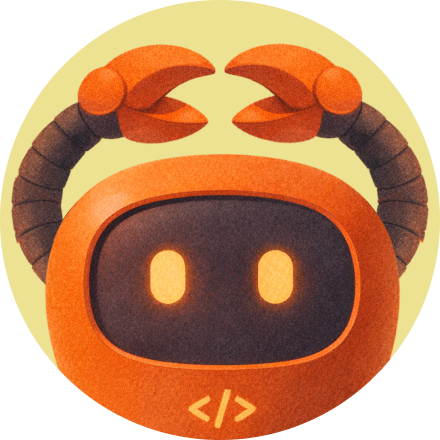
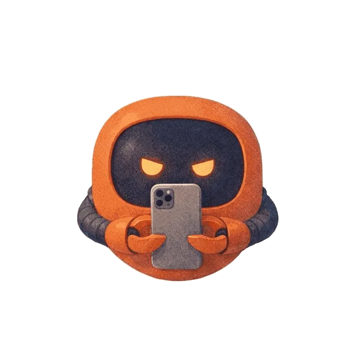
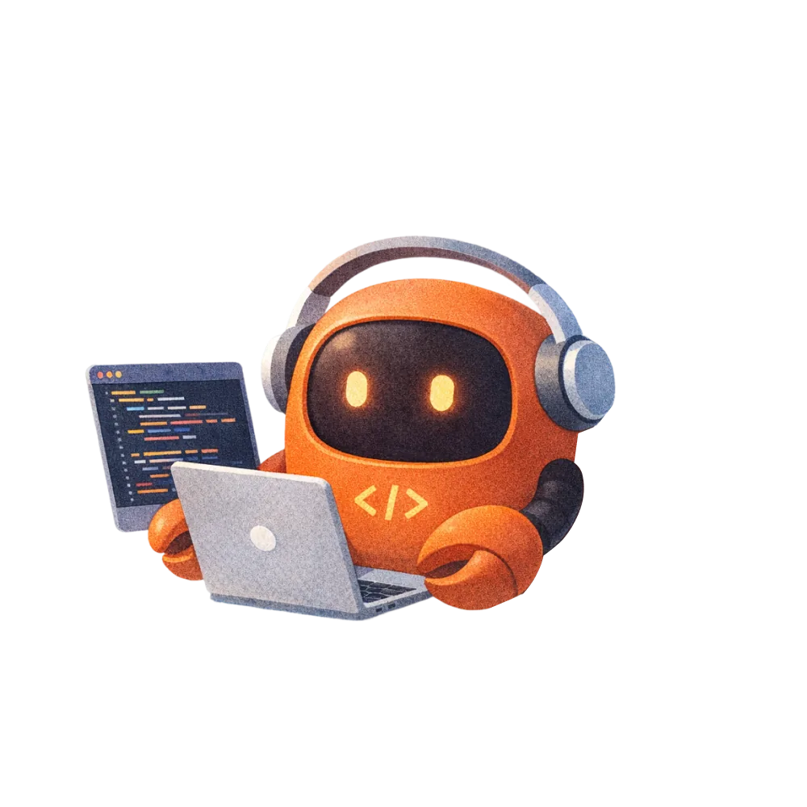
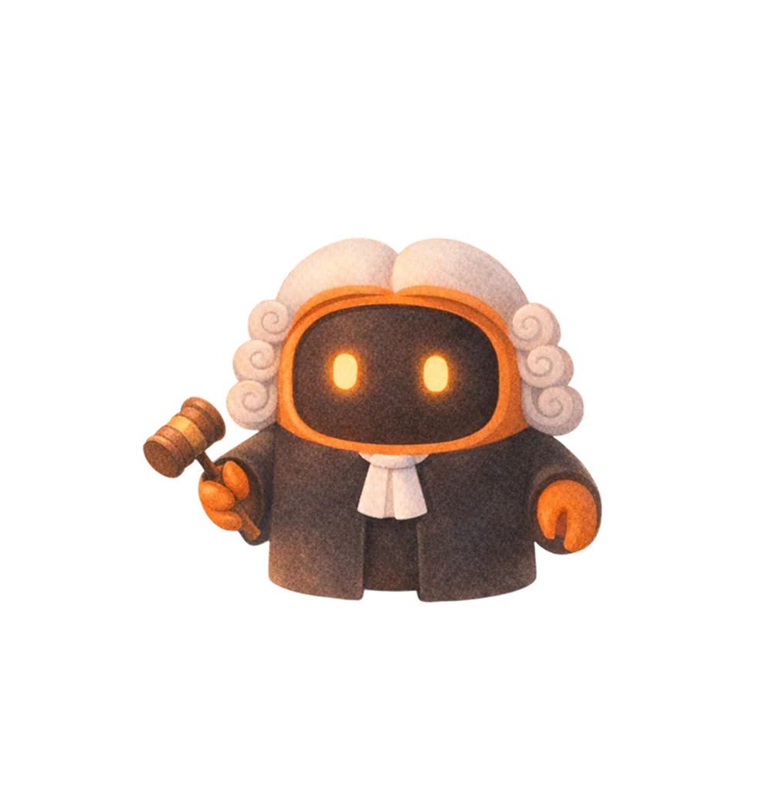
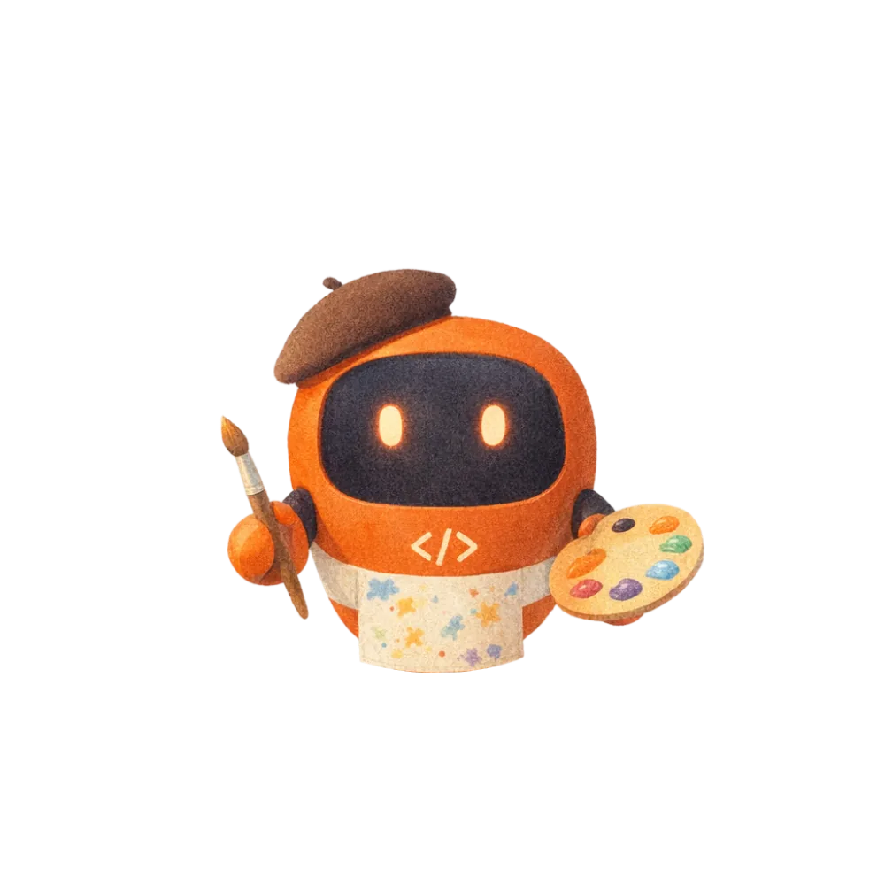
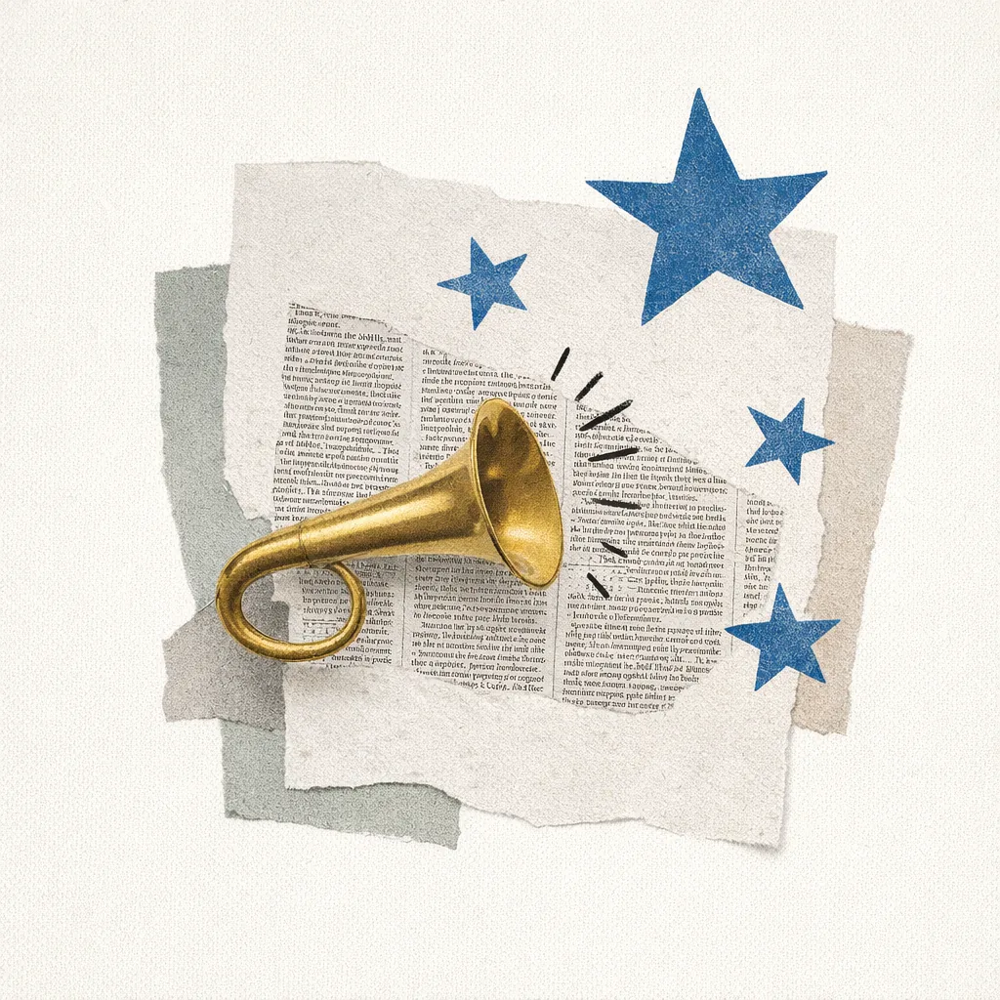
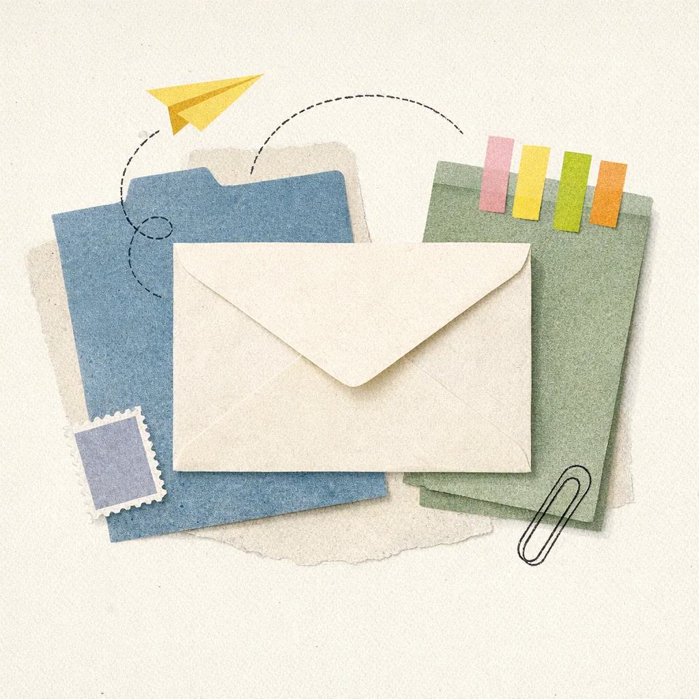
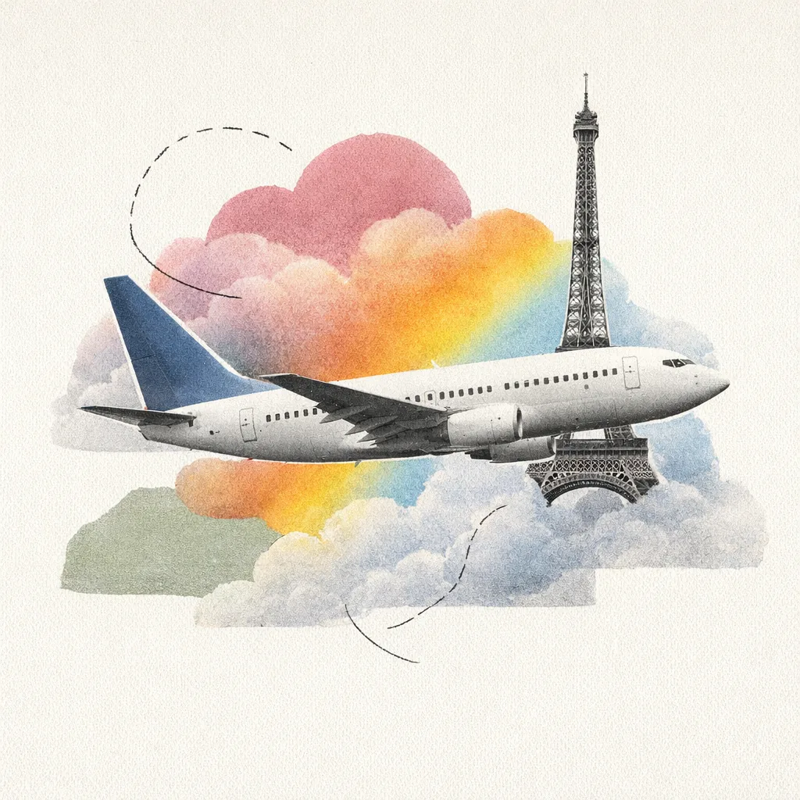

<!doctype html>
<html lang="en">
<head>
  <meta charset="UTF-8" />
  <meta name="viewport" content="width=device-width, initial-scale=1.0" />
  <title>MicroClaw — First-run journey (embed)</title>
  <link rel="preconnect" href="https://fonts.googleapis.com">
  <link rel="preconnect" href="https://fonts.gstatic.com" crossorigin>
  <link href="https://fonts.googleapis.com/css2?family=Inter:wght@400;500;600;700;800&family=JetBrains+Mono:wght@400;500;600&display=swap" rel="stylesheet">
  <style>
    :root {
      --bg: #fafafa;
      --paper: #ffffff;
      --ink: #0a0a0a;
      --ink-2: #1a1a1a;
      --text: #303035;
      --muted: #71717a;
      --muted-2: #a1a1aa;
      --line: #e6e6ea;
      --line-2: #efeff2;
      --accent: #10b981;
      --accent-hover: #0ea371;
      --accent-soft: rgba(16, 185, 129, 0.10);
      --accent-line: rgba(16, 185, 129, 0.28);
      --mono: "JetBrains Mono", ui-monospace, SFMono-Regular, "SF Mono", Menlo, Consolas, monospace;
      --sans: "Inter", -apple-system, BlinkMacSystemFont, "Segoe UI", system-ui, sans-serif;
    }

    * { box-sizing: border-box; }
    html { scroll-behavior: smooth; }
    body {
      margin: 0;
      font-family: var(--sans);
      font-feature-settings: "cv11", "ss01", "ss03";
      font-size: 14px;
      line-height: 1.6;
      color: var(--text);
      background: var(--bg);
      -webkit-font-smoothing: antialiased;
      -moz-osx-font-smoothing: grayscale;
    }

    ::selection { background: var(--accent-soft); color: var(--ink); }

    button { font: inherit; }
    a { color: inherit; }

    .num, .tabular { font-variant-numeric: tabular-nums; }
    .mono { font-family: var(--mono); font-feature-settings: normal; }

    .app {
      min-height: 100vh;
      display: grid;
      grid-template-columns: 240px 1fr;
      transition: grid-template-columns 180ms ease;
    }

    .app.nav-collapsed { grid-template-columns: 64px 1fr; }

    /* ============== SIDEBAR ============== */
    .side {
      position: sticky;
      top: 0;
      height: 100vh;
      padding: 28px 24px;
      border-right: 1px solid var(--line);
      background: var(--bg);
      z-index: 5;
      overflow: hidden;
      transition: padding 180ms ease;
      display: flex;
      flex-direction: column;
    }

    .app.nav-collapsed .side { padding: 24px 14px; }

    .side-toggle {
      width: 28px;
      height: 28px;
      display: grid;
      place-items: center;
      margin: 0 0 28px auto;
      border: 1px solid var(--line);
      border-radius: 6px;
      background: var(--paper);
      color: var(--muted);
      cursor: pointer;
      transition: 120ms ease;
      padding: 0;
    }

    .side-toggle:hover { color: var(--ink); border-color: var(--ink-2); }

    .side-toggle-icon {
      display: block;
      font-size: 14px;
      line-height: 1;
      transform: rotate(180deg);
      transition: transform 180ms ease;
    }

    .app.nav-collapsed .side-toggle { margin: 0 auto 28px; }
    .app.nav-collapsed .side-toggle-icon { transform: rotate(0deg); }

    .side-content {
      opacity: 1;
      transform: translateX(0);
      transition: opacity 140ms ease, transform 180ms ease;
      flex: 1;
      display: flex;
      flex-direction: column;
      min-height: 0;
    }

    .app.nav-collapsed .side-content {
      pointer-events: none;
      opacity: 0;
      transform: translateX(-8px);
    }

    .collapsed-label {
      display: none;
      margin: 4px auto 0;
      color: var(--muted-2);
      font-family: var(--mono);
      font-size: 10px;
      font-weight: 500;
      letter-spacing: 0.16em;
      line-height: 1;
      text-transform: uppercase;
      writing-mode: vertical-rl;
      transform: rotate(180deg);
    }

    .app.nav-collapsed .collapsed-label { display: block; }

    .side-back {
      display: inline-flex;
      align-items: center;
      gap: 7px;
      margin-bottom: 20px;
      font-family: var(--mono);
      font-size: 11.5px;
      font-weight: 500;
      letter-spacing: 0.02em;
      color: var(--muted);
      text-decoration: none;
      transition: color 120ms ease;
    }
    .side-back:hover { color: var(--ink); }
    .side-back-arw { transition: transform 160ms ease; }
    .side-back:hover .side-back-arw { transform: translateX(-3px); }

    .side-kicker {
      color: var(--muted);
      font-family: var(--mono);
      font-size: 11px;
      font-weight: 500;
      letter-spacing: 0.04em;
      text-transform: uppercase;
    }

    .side h1 {
      margin: 14px 0 6px;
      font-size: 19px;
      font-weight: 600;
      line-height: 1.2;
      letter-spacing: -0.02em;
      color: var(--ink);
    }

    .side p {
      margin: 0 0 28px;
      color: var(--muted);
      font-size: 13px;
      line-height: 1.5;
    }

    .nav {
      display: grid;
      gap: 1px;
      margin-top: 4px;
    }

    .nav-label {
      color: var(--muted-2);
      font-family: var(--mono);
      font-size: 10px;
      font-weight: 500;
      letter-spacing: 0.12em;
      text-transform: uppercase;
      padding: 0 10px 8px;
    }

    .nav a {
      position: relative;
      display: flex;
      align-items: center;
      gap: 10px;
      padding: 7px 10px 7px 14px;
      color: var(--muted);
      text-decoration: none;
      font-size: 13px;
      font-weight: 500;
      border-radius: 4px;
      transition: 120ms ease;
    }

    .nav a::before {
      content: "";
      position: absolute;
      left: 0;
      top: 8px;
      bottom: 8px;
      width: 2px;
      border-radius: 1px;
      background: transparent;
      transition: 120ms ease;
    }

    .nav a:hover { color: var(--ink); }

    .nav a.active {
      color: var(--ink);
      background: var(--accent-soft);
    }

    .nav a.active::before { background: var(--accent); }

    .nav-num {
      font-family: var(--mono);
      font-size: 11px;
      font-weight: 500;
      color: var(--muted-2);
      letter-spacing: 0;
      min-width: 18px;
    }

    .nav a.active .nav-num { color: var(--accent); }

    .side-footer {
      margin-top: auto;
      padding-top: 24px;
      border-top: 1px solid var(--line);
      color: var(--muted-2);
      font-family: var(--mono);
      font-size: 10px;
      letter-spacing: 0.08em;
      text-transform: uppercase;
      display: flex;
      justify-content: space-between;
      gap: 8px;
    }

    /* ============== MAIN ============== */
    main {
      padding: 48px clamp(20px, 4vw, 72px) 96px;
      overflow: hidden;
      max-width: 100%;
    }

    .main-inner {
      max-width: 1232px;
      margin: 0 auto;
    }

    /* ============== HERO ============== */
    .hero {
      min-height: calc(100vh - 96px);
      display: grid;
      align-content: center;
      padding-bottom: 64px;
      border-bottom: 1px solid var(--line);
      margin-bottom: 0;
    }

    .eyebrow {
      display: inline-flex;
      align-items: center;
      gap: 8px;
      width: max-content;
      max-width: 100%;
      padding: 5px 10px;
      border: 1px solid var(--line);
      border-radius: 999px;
      background: var(--paper);
      color: var(--muted);
      font-family: var(--mono);
      font-size: 11px;
      font-weight: 500;
      letter-spacing: 0.02em;
    }

    .eyebrow::before {
      content: "";
      width: 6px;
      height: 6px;
      border-radius: 50%;
      background: var(--accent);
    }

    .hero-title {
      max-width: 1020px;
      margin: 28px 0 20px;
      font-size: clamp(48px, 8.2vw, 96px);
      font-weight: 600;
      line-height: 0.96;
      letter-spacing: -0.04em;
      color: var(--ink);
    }

    .hero-subtitle {
      margin: 0;
      max-width: 720px;
      color: var(--muted);
      font-size: clamp(18px, 2.2vw, 24px);
      line-height: 1.32;
      letter-spacing: -0.012em;
      font-weight: 400;
    }

    .tags {
      display: flex;
      flex-wrap: wrap;
      gap: 6px;
      margin-top: 40px;
      max-width: 900px;
    }

    .tag {
      padding: 4px 9px;
      border: 1px solid var(--line);
      border-radius: 4px;
      background: var(--paper);
      color: var(--muted);
      font-family: var(--mono);
      font-size: 11.5px;
      font-weight: 500;
      letter-spacing: 0;
      transition: 120ms ease;
    }

    .tag:hover { border-color: var(--ink-2); color: var(--ink); }

    .hero-actions {
      display: flex;
      flex-wrap: wrap;
      gap: 10px;
      margin-top: 36px;
    }

    .btn {
      display: inline-flex;
      align-items: center;
      gap: 6px;
      border: 1px solid transparent;
      border-radius: 6px;
      padding: 9px 14px;
      font-size: 13px;
      font-weight: 500;
      cursor: pointer;
      transition: 120ms ease;
      letter-spacing: -0.005em;
    }

    .btn.primary {
      background: var(--ink);
      color: var(--paper);
      border-color: var(--ink);
    }

    .btn.primary:hover { background: var(--ink-2); }

    .btn.secondary {
      background: var(--paper);
      color: var(--ink);
      border-color: var(--line);
    }

    .btn.secondary:hover { border-color: var(--ink-2); }

    .btn::after {
      content: "→";
      font-family: var(--mono);
      font-size: 12px;
      opacity: 0.7;
      transition: 120ms ease;
    }

    .btn:hover::after { transform: translateX(2px); opacity: 1; }

    /* ============== HERO META STRIP ============== */
    .hero-meta {
      display: grid;
      grid-template-columns: repeat(4, 1fr);
      gap: 0;
      margin-top: 56px;
      padding-top: 28px;
      border-top: 1px solid var(--line);
    }

    .hero-meta-cell {
      padding: 0 24px;
      border-right: 1px solid var(--line);
    }
    .hero-meta-cell:first-child { padding-left: 0; }
    .hero-meta-cell:last-child { border-right: 0; padding-right: 0; }

    .hero-meta-label {
      color: var(--muted-2);
      font-family: var(--mono);
      font-size: 10.5px;
      font-weight: 500;
      letter-spacing: 0.1em;
      text-transform: uppercase;
      margin-bottom: 8px;
    }

    .hero-meta-value {
      color: var(--ink);
      font-size: 14px;
      font-weight: 500;
      letter-spacing: -0.005em;
    }

    /* ============== SECTIONS ============== */
    .section {
      display: grid;
      grid-template-columns: minmax(220px, 0.85fr) minmax(420px, 2.15fr);
      gap: 56px;
      padding: 80px 0;
      border-bottom: 1px solid var(--line);
      scroll-margin-top: 28px;
    }

    .section.full-width-section,
    .section.challenge-section {
      grid-template-columns: 1fr;
      gap: 40px;
    }

    .section.full-width-section .section-intro,
    .section.challenge-section .section-intro {
      position: relative;
      top: auto;
      max-width: 760px;
    }

    .section-intro {
      position: sticky;
      top: 40px;
      align-self: start;
    }

    .section-num {
      display: inline-block;
      color: var(--muted);
      font-family: var(--mono);
      font-size: 11px;
      font-weight: 500;
      letter-spacing: 0.04em;
      text-transform: uppercase;
      padding-bottom: 6px;
      border-bottom: 1px solid var(--line);
      margin-bottom: 18px;
    }

    .section h2 {
      margin: 0 0 14px;
      font-size: clamp(28px, 3.4vw, 40px);
      font-weight: 600;
      line-height: 1.05;
      letter-spacing: -0.025em;
      color: var(--ink);
    }

    .section-intro p {
      margin: 0;
      color: var(--muted);
      font-size: 14.5px;
      line-height: 1.62;
      max-width: 380px;
    }

    .section.full-width-section .section-intro p,
    .section.challenge-section .section-intro p {
      max-width: 720px;
      font-size: 16px;
    }

    /* ============== CARDS ============== */
    .content-card {
      border: 1px solid var(--line);
      border-radius: 8px;
      background: var(--paper);
      overflow: hidden;
    }

    .big-copy {
      padding: clamp(20px, 3vw, 32px);
      font-size: clamp(18px, 1.8vw, 22px);
      line-height: 1.42;
      letter-spacing: -0.018em;
      color: var(--ink);
      font-weight: 500;
      border-bottom: 1px solid var(--line);
    }

    .muted-block {
      margin-top: 16px;
      padding-top: 16px;
      border-top: 1px solid var(--line-2);
      color: var(--muted);
      font-size: 14px;
      line-height: 1.6;
      letter-spacing: 0;
      font-weight: 400;
    }

    /* role grid: flat tiles separated by 1px */
    .role-grid {
      display: grid;
      grid-template-columns: repeat(3, minmax(0, 1fr));
      gap: 0;
    }

    .role-card {
      padding: 24px clamp(20px, 3vw, 28px);
      border-right: 1px solid var(--line);
      transition: 120ms ease;
    }
    .role-card:last-child { border-right: 0; }

    .role-card:hover { background: var(--bg); }

    .role-card strong {
      display: block;
      color: var(--muted);
      font-family: var(--mono);
      font-size: 11px;
      font-weight: 500;
      letter-spacing: 0.04em;
      text-transform: uppercase;
    }

    .role-card span {
      display: block;
      margin-top: 12px;
      color: var(--text);
      font-size: 14px;
      line-height: 1.6;
    }

    /* ============== CHALLENGE BREAKS ============== */
    .break-grid {
      display: grid;
      grid-template-columns: repeat(4, minmax(0, 1fr));
      gap: 0;
    }

    .break-card {
      position: relative;
      padding: 28px 22px;
      border-right: 1px solid var(--line);
      min-height: 180px;
      display: grid;
      align-content: start;
      gap: 12px;
      transition: 120ms ease;
    }

    .break-card:last-child { border-right: 0; }
    .break-card:hover { background: var(--bg); }

    .break-card::before {
      content: attr(data-step);
      color: var(--accent);
      font-family: var(--mono);
      font-size: 11px;
      font-weight: 500;
      letter-spacing: 0.04em;
    }

    .break-card strong {
      display: block;
      font-size: 16px;
      font-weight: 600;
      letter-spacing: -0.012em;
      color: var(--ink);
      line-height: 1.3;
    }

    .break-card span {
      display: block;
      color: var(--muted);
      font-size: 13.5px;
      line-height: 1.58;
    }

    /* ============== MAP (Journey × Belief × Capability) ============== */
    .map-wrap { padding: clamp(24px, 3vw, 36px); }

    .map-header {
      display: grid;
      gap: 14px;
      margin-bottom: 32px;
      max-width: 760px;
      padding-bottom: 28px;
      border-bottom: 1px solid var(--line);
    }

    .map-header h3 {
      margin: 0;
      font-size: clamp(22px, 2.4vw, 28px);
      font-weight: 600;
      line-height: 1.1;
      letter-spacing: -0.02em;
      color: var(--ink);
    }

    .map-theme-label {
      width: max-content;
      max-width: 100%;
      color: var(--accent);
      font-family: var(--mono);
      font-size: 11px;
      font-weight: 500;
      letter-spacing: 0.04em;
    }

    .map-caption {
      display: grid;
      gap: 8px;
      color: var(--muted);
      font-size: 13.5px;
      line-height: 1.55;
      margin-top: 4px;
    }

    .map-caption div {
      display: flex;
      gap: 10px;
      align-items: baseline;
    }

    .map-caption strong {
      color: var(--ink);
      font-weight: 600;
      font-family: var(--mono);
      font-size: 11px;
      letter-spacing: 0.04em;
      text-transform: uppercase;
      min-width: 100px;
    }

    .relation-map {
      position: relative;
      display: grid;
      grid-template-columns: minmax(280px, 1fr) minmax(180px, 0.5fr) minmax(280px, 1fr);
      gap: clamp(20px, 3vw, 40px);
      align-items: stretch;
      min-height: 720px;
    }

    .map-column {
      display: grid;
      grid-template-rows: repeat(5, 1fr);
      gap: 8px;
      z-index: 2;
    }

    .capability-column { grid-template-rows: repeat(7, 1fr); }

    .stage-node, .capability-node {
      position: relative;
      z-index: 3;
      border: 1px solid var(--line);
      background: var(--paper);
      border-radius: 6px;
      padding: 14px 16px;
      cursor: pointer;
      transition: 120ms ease;
    }

    .stage-node:hover, .stage-node.active,
    .capability-node:hover, .capability-node.active {
      z-index: 20;
      border-color: var(--ink-2);
      background: var(--paper);
    }

    .stage-node.pinned, .capability-node.pinned {
      border-color: var(--accent);
      background: var(--accent-soft);
    }

    .stage-node.locked-out, .capability-node.locked-out { cursor: default; }

    .stage-node.dim, .capability-node.dim {
      opacity: 0.4;
      filter: none;
    }

    .stage-node.dim:hover, .capability-node.dim:hover {
      border-color: var(--line);
    }

    .node-kicker {
      display: flex;
      align-items: center;
      gap: 6px;
      color: var(--muted-2);
      font-family: var(--mono);
      font-size: 10.5px;
      font-weight: 500;
      letter-spacing: 0.08em;
      text-transform: uppercase;
    }

    .node-kicker::before {
      content: "";
      width: 4px;
      height: 4px;
      border-radius: 50%;
      background: var(--muted-2);
    }

    .stage-node.active .node-kicker::before,
    .stage-node.pinned .node-kicker::before,
    .capability-node.active .node-kicker::before,
    .capability-node.pinned .node-kicker::before {
      background: var(--accent);
    }

    .stage-index {
      position: absolute;
      top: 12px;
      right: 14px;
      color: var(--muted-2);
      font-family: var(--mono);
      font-size: 11px;
      font-weight: 500;
      letter-spacing: 0;
      pointer-events: none;
      font-variant-numeric: tabular-nums;
    }

    .stage-node.active .stage-index,
    .stage-node.pinned .stage-index {
      color: var(--accent);
    }

    .stage-node strong, .capability-node strong {
      display: block;
      margin-top: 8px;
      font-size: 15px;
      font-weight: 600;
      line-height: 1.22;
      letter-spacing: -0.015em;
      color: var(--ink);
    }

    .belief {
      display: block;
      margin-top: 8px;
      color: var(--muted);
      font-size: 12.5px;
      line-height: 1.5;
    }

    .belief em {
      color: var(--ink);
      font-style: normal;
      font-weight: 500;
    }

    .capability-node span {
      display: block;
      margin-top: 8px;
      color: var(--muted);
      font-size: 12.5px;
      line-height: 1.5;
    }

    .map-center {
      position: relative;
      z-index: 1;
      border-radius: 8px;
      background: transparent;
      border: 0;
      overflow: visible;
      display: grid;
      place-items: center;
      pointer-events: none;
    }

    .map-center-label {
      display: block;
      color: var(--muted-2);
      font-family: var(--mono);
      font-size: 10px;
      font-weight: 500;
      letter-spacing: 0.14em;
      text-transform: uppercase;
      writing-mode: vertical-rl;
      transform: rotate(180deg);
      text-align: center;
    }

    .map-svg {
      position: absolute;
      inset: 0;
      width: 100%;
      height: 100%;
      overflow: visible;
      pointer-events: none;
      z-index: 1;
    }

    .map-line {
      fill: none;
      stroke: var(--line);
      stroke-width: 1;
      transition: 120ms ease;
    }

    .map-line.active {
      stroke: var(--accent);
      stroke-width: 1.5;
    }

    .map-line.dim { opacity: 0.3; }

    /* ============== EXPERIENCE ============== */
    .experience-grid {
      display: grid;
      grid-template-columns: 1fr;
      gap: 0;
    }

    .experience-card {
      display: grid;
      gap: 28px;
      cursor: default;
      border: 1px solid var(--line);
      border-radius: 8px;
      background: var(--paper);
      padding: clamp(24px, 3vw, 36px);
      margin-bottom: 16px;
    }

    .experience-card.featured-experience {
      grid-column: 1 / -1;
      min-height: auto;
    }

    .experience-card-header {
      display: grid;
      gap: 10px;
      align-items: start;
      padding-bottom: 24px;
      border-bottom: 1px solid var(--line);
    }

    .experience-card-header strong {
      display: flex;
      align-items: baseline;
      gap: 14px;
      font-size: clamp(20px, 2.4vw, 28px);
      font-weight: 600;
      line-height: 1.15;
      letter-spacing: -0.022em;
      color: var(--ink);
      font-variant-numeric: tabular-nums;
    }

    .experience-card-header strong::first-letter {
      color: var(--muted-2);
    }

    .experience-detail {
      display: grid;
      gap: 14px;
      color: var(--text);
      font-size: 14px;
      line-height: 1.6;
    }

    .experience-detail p { margin: 0; }

    .experience-detail strong {
      display: inline;
      font-size: inherit;
      color: var(--ink);
      font-weight: 600;
      letter-spacing: 0;
    }

    .decision-callout {
      margin: 0;
      padding: 16px 18px;
      border: 1px solid var(--accent-line);
      border-left: 2px solid var(--accent);
      border-radius: 4px;
      background: var(--accent-soft);
      color: var(--ink) !important;
      font-size: 15px !important;
      font-weight: 500;
      line-height: 1.5 !important;
      letter-spacing: -0.01em;
    }

    .decision-callout strong {
      display: block;
      margin-bottom: 4px;
      color: var(--accent) !important;
      font-family: var(--mono);
      font-size: 10.5px !important;
      font-weight: 500;
      letter-spacing: 0.08em !important;
      text-transform: uppercase;
    }

    .experience-visual-placeholder {
      display: grid;
      grid-template-columns: 1fr;
      gap: 0;
      padding: 0;
      background: transparent;
      border: 1px solid var(--line);
      border-radius: 6px;
      overflow: hidden;
    }

    .visual-state {
      display: grid;
      grid-template-columns: 1fr;
      gap: 0;
      align-items: stretch;
      border-bottom: 1px solid var(--line);
    }
    .visual-state:last-child { border-bottom: 0; }

    .visual-media-box {
      aspect-ratio: 4 / 3;
      min-height: 0;
      border-right: 0;
      border-bottom: 1px solid var(--line);
      background: var(--bg);
      background-image:
        linear-gradient(var(--line-2) 1px, transparent 1px),
        linear-gradient(90deg, var(--line-2) 1px, transparent 1px);
      background-size: 24px 24px;
      background-position: -1px -1px;
      display: grid;
      place-items: center;
      text-align: center;
      padding: 24px;
      color: var(--muted-2);
    }

    .visual-media-box strong {
      display: block;
      color: var(--muted);
      font-family: var(--mono);
      font-size: 11px;
      font-weight: 500;
      letter-spacing: 0.08em;
      text-transform: uppercase;
    }

    .visual-copy {
      display: grid;
      align-content: start;
      gap: 10px;
      padding: 24px 26px;
      color: var(--muted);
      font-size: 13.5px;
      line-height: 1.62;
    }

    .visual-copy strong {
      display: block;
      color: var(--ink);
      font-size: 16px;
      font-weight: 600;
      line-height: 1.25;
      letter-spacing: -0.015em;
    }

    .visual-copy-split {
      display: grid;
      grid-template-columns: 1fr 1px 1fr;
      align-items: stretch;
    }
    .visual-copy-divider {
      background: var(--line);
    }

    /* ============== APP PALETTE (MicroClaw warm stone) ============== */
    :root {
      --mc-bg:        #f8f4f1;
      --mc-paper:     #ffffff;
      --mc-text:      #272320;
      --mc-text-2:    #4c4642;
      --mc-text-muted:#b3ada8;
      --mc-border:    rgba(0,0,0,0.12);  /* --border (compose-wrapper)  */
      --mc-border-row:rgba(0,0,0,0.10);  /* --border-row (sidebar/pnav dividers, new-agent-btn) */
      --mc-border-lt: #efeae7;           /* --border-light (titlebar bottom only) */
      --mc-selected:  rgba(39, 35, 32, 0.055);  /* --bg-selected — ink at low alpha, a wash over the surface (app replaced the opaque #efeae7 with this) */
      --mc-accent:    #a25a02;
      --mc-accent-lt: #fee6d4;
    }

    /* ============== INSTALL MOCKUP ============== */
    .install-dual {
      width: 100%;
      height: 100%;
      display: grid;
      grid-template-columns: 1fr 1fr;
      gap: 0;
    }
    /* Card 01 dual frame uses a tighter aspect ratio than the 4/3 default */
    .visual-media-box:has(.install-dual) { aspect-ratio: 29 / 14; }
    /* Card 02 keeps the default 4/3 ratio (1160 × 870) — gives chat-thread room for 2-3 line heading + cards without overlap */
    .install-mock {
      width: 100%;
      height: 100%;
      display: grid;
      place-items: center;
      padding: 16px;
    }
    .install-window {
      width: min(360px, 100%);
      height: 360px;
      background: var(--mc-bg);
      border: 1px solid var(--mc-border);
      border-radius: 16px;
      padding: 18px 28px 20px;
      display: flex;
      flex-direction: column;
      align-items: center;
      position: relative;
      overflow: hidden;
    }
    .iw-confetti-canvas {
      position: absolute;
      inset: 0;
      width: 100%;
      height: 100%;
      pointer-events: none;
      z-index: 5;
    }
    /* Warm-stone chip circle — mirrors SetupWizard.vue .close-btn:
       bg-tertiary rest → border-on-hover darken, ink X, active scale-in. */
    .install-window .iw-close {
      position: absolute;
      top: 12px;
      right: 12px;
      width: 28px;
      height: 28px;
      border-radius: 50%;
      border: none;
      background: var(--mc-selected);
      display: grid;
      place-items: center;
      color: var(--mc-text-2);
      line-height: 1;
      z-index: 6;
      cursor: default;
      transition: background .15s ease, color .15s ease, transform .1s ease;
    }
    .install-window .iw-close:hover { background: var(--mc-border); color: var(--mc-text); }
    .install-window .iw-close:active { transform: scale(0.94); }
    .install-window .iw-close svg { width: 14px; height: 14px; }
    /* Shared bottom slot keeps notice/buttons (welcome) and desc/progress
       (installing) at the same vertical zone — mirrors original .welcome-bottom */
    .install-window .iw-bottom {
      display: flex;
      flex-direction: column;
      align-items: center;
      min-height: 122px;
      width: 100%;
    }
    .install-window .iw-mascot {
      width: 208px;
      height: 208px;
      object-fit: contain;
      margin-top: 0;
      margin-bottom: -14px;
    }
    .install-window .iw-title {
      font-size: 22px;
      font-weight: 700;
      color: var(--mc-text);
      letter-spacing: -0.03em;
      line-height: 1.25;
      /* Pulled up over the enlarged mascot's transparent lower padding —
         mirrors SetupWizard.vue .welcome-title margin-top:-32px. */
      margin: -20px 0 6px;
      min-height: 28px;
      text-align: center;
    }
    .install-window .iw-notice {
      font-size: 11.5px;
      color: var(--mc-text-muted);
      text-align: center;
      line-height: 1.7;
      margin: 4px 0 14px;
      max-width: 260px;
    }
    .install-window .iw-notice a {
      color: var(--mc-text-2);
      text-decoration: underline;
      text-underline-offset: 2px;
    }
    .install-window .iw-desc {
      font-size: 12px;
      font-weight: 500;
      color: var(--mc-text-2);
      margin: 6px 0 14px;
      letter-spacing: 0.01em;
    }
    .install-window .iw-progress {
      width: 200px;
      height: 6px;
      background: var(--mc-selected);
      border-radius: 99px;
      overflow: hidden;
      margin-bottom: 14px;
    }
    .install-window .iw-progress-bar {
      height: 100%;
      width: 0%;
      background: var(--mc-text);
      border-radius: 99px;
      animation: iw-progress-fill 6s linear infinite;
    }
    @keyframes iw-progress-fill {
      0%   { width: 0%; }
      95%  { width: 100%; }
      100% { width: 100%; }
    }

    /* Cycling title (Intuitive / Trustworthy / Built for you) */
    .iw-cycle {
      position: relative;
      width: 100%;
      text-align: center;
      height: 26px;
      margin: -20px 0 6px;
    }
    .iw-cycle .iw-cycle-item {
      position: absolute;
      inset: 0;
      font-size: 22px;
      font-weight: 700;
      color: var(--mc-text);
      letter-spacing: -0.03em;
      line-height: 1.25;
      opacity: 0;
      animation: iw-cycle-fade 6s ease-in-out infinite;
    }
    .iw-cycle .iw-cycle-item:nth-child(1) { animation-delay: 0s; }
    .iw-cycle .iw-cycle-item:nth-child(2) { animation-delay: 2s; }
    .iw-cycle .iw-cycle-item:nth-child(3) { animation-delay: 4s; }

    .iw-cycle-desc {
      position: relative;
      width: 100%;
      text-align: center;
      height: 18px;
      margin: 6px 0 14px;
    }
    .iw-cycle-desc .iw-cycle-desc-item {
      position: absolute;
      inset: 0;
      font-size: 12px;
      font-weight: 500;
      color: var(--mc-text-2);
      letter-spacing: 0.01em;
      opacity: 0;
      animation: iw-cycle-fade 6s ease-in-out infinite;
    }
    .iw-cycle-desc .iw-cycle-desc-item:nth-child(1) { animation-delay: 0s; }
    .iw-cycle-desc .iw-cycle-desc-item:nth-child(2) { animation-delay: 2s; }
    .iw-cycle-desc .iw-cycle-desc-item:nth-child(3) { animation-delay: 4s; }

    @keyframes iw-cycle-fade {
      0%   { opacity: 0; }
      4%   { opacity: 1; }
      30%  { opacity: 1; }
      34%  { opacity: 0; }
      100% { opacity: 0; }
    }

    /* Cycling mascot images (paired with phrase) */
    .iw-mascot-cycle {
      position: relative;
      width: 208px;
      height: 208px;
      margin-top: 0;
      margin-bottom: -14px;
      animation: iw-mascot-bob 2.6s ease-in-out infinite;
    }
    .iw-mascot-cycle .iw-mascot-item {
      position: absolute;
      inset: 0;
      width: 100%;
      height: 100%;
      object-fit: contain;
      opacity: 0;
      animation: iw-cycle-fade 6s ease-in-out infinite;
    }
    .iw-mascot-cycle .iw-mascot-item:nth-child(1) { animation-delay: 0s; }
    .iw-mascot-cycle .iw-mascot-item:nth-child(2) { animation-delay: 2s; }
    .iw-mascot-cycle .iw-mascot-item:nth-child(3) { animation-delay: 4s; }

    @keyframes iw-mascot-bob {
      0%, 100% { transform: translateY(0); }
      50%      { transform: translateY(-4px); }
    }

    /* Welcome state: fold ↔ expand toggle (auto-loop, mirrors original 400ms expand → settle behavior) */
    .iw-mascot-toggle {
      position: relative;
      width: 208px;
      height: 208px;
      margin-top: 0;
      margin-bottom: -14px;
    }
    .iw-mascot-toggle .iw-mascot-fold,
    .iw-mascot-toggle .iw-mascot-expand {
      position: absolute;
      inset: 0;
      width: 100%;
      height: 100%;
      object-fit: contain;
    }
    .iw-mascot-toggle .iw-mascot-fold {
      animation: iw-toggle-fold 4s ease-in-out infinite;
    }
    .iw-mascot-toggle .iw-mascot-expand {
      animation: iw-toggle-expand 4s ease-in-out infinite;
    }
    @keyframes iw-toggle-fold {
      0%   { opacity: 1; }
      18%  { opacity: 1; }
      24%  { opacity: 0; }
      88%  { opacity: 0; }
      94%  { opacity: 1; }
      100% { opacity: 1; }
    }
    @keyframes iw-toggle-expand {
      0%   { opacity: 0; }
      18%  { opacity: 0; }
      24%  { opacity: 1; transform: translateY(0) scale(1); }
      30%  { transform: translateY(-2px) scale(1.04); }
      40%  { transform: translateY(0) scale(1); }
      88%  { opacity: 1; }
      94%  { opacity: 0; }
      100% { opacity: 0; }
    }
    .install-window .iw-btn-primary {
      width: auto;
      padding: 9px 28px;
      border-radius: 20px;
      background: var(--mc-text);
      color: #fff;
      font-size: 12.5px;
      font-weight: 600;
      letter-spacing: 0.01em;
      margin-bottom: 4px;
    }
    .install-window .iw-btn-ghost {
      width: 100%;
      height: 38px;
      border-radius: 14px;
      background: transparent;
      color: var(--mc-text-2);
      font-size: 12.5px;
      font-weight: 500;
      display: grid;
      place-items: center;
    }

    /* ============== APP SHELL (matches latest MicroClaw layout) ============== */
    /* No-sidebar variant for New Agent page (only level-1 pnav, main fills the rest).
       Use double-class to win over .app-shell { grid-template-columns } defined later in source. */
    .app-shell.app-shell--no-sidebar {
      grid-template-columns: 52px 1fr;
    }
    .app-shell.app-shell--no-sidebar .app-main {
      grid-column: 2;
    }

    /* ============== NEW AGENT PAGE (mirrors NewAgentView.vue) ============== */
    .new-agent-view {
      height: 100%;
      display: flex;
      flex-direction: column;
      background: var(--mc-paper);
      overflow: hidden;
      padding: 28px 36px 40px;
    }
    .new-agent-topbar {
      display: flex;
      align-items: center;
      gap: 16px;
      margin-bottom: 32px;
      flex-shrink: 0;
    }
    .new-agent-topbar__title {
      flex: 1;
      font-size: 22px;
      font-weight: 700;
      color: var(--mc-text);
      letter-spacing: -0.025em;
      line-height: 1.2;
      margin: 0;
    }
    .customize-btn {
      display: inline-flex;
      align-items: center;
      gap: 7px;
      padding: 8px 16px;
      border-radius: 10px;
      border: 1px solid var(--mc-border);
      background: var(--mc-paper);
      font-size: 13px;
      font-weight: 500;
      color: var(--mc-text-2);
      flex-shrink: 0;
    }
    .customize-btn svg { width: 13px; height: 13px; }

    .agent-grid {
      display: grid;
      grid-template-columns: repeat(auto-fill, minmax(210px, 1fr));
      gap: 16px;
    }
    .agent-card {
      border-radius: 18px;
      border: 0.5px solid var(--mc-border);
      background: var(--mc-bg);
      overflow: hidden;
      display: flex;
      flex-direction: column;
    }
    .agent-card__img-area {
      position: relative;
      height: 200px;
      display: flex;
      align-items: flex-end;
      justify-content: center;
      overflow: hidden;
    }
    .agent-card__img {
      width: 200px;
      height: 200px;
      object-fit: contain;
      object-position: bottom center;
      flex-shrink: 0;
    }
    .agent-card__body {
      padding: 12px 16px 8px;
      margin-top: -20px;
      flex: 1;
      display: flex;
      flex-direction: column;
      gap: 4px;
      position: relative;
      z-index: 1;
    }
    .agent-card__name {
      font-size: 15px;
      font-weight: 700;
      color: var(--mc-text);
      letter-spacing: -0.01em;
    }
    .agent-card__desc {
      font-size: 12px;
      color: var(--mc-text-2);
      line-height: 1.5;
    }
    .agent-card__tags {
      display: flex;
      flex-wrap: wrap;
      gap: 5px;
      margin-top: 8px;
    }
    .agent-tag {
      display: inline-block;
      padding: 2px 8px;
      border-radius: 999px;
      font-size: 11px;
      color: var(--mc-text-muted);
      background: rgba(18, 24, 32, 0.05);
      border: 1px solid var(--mc-border);
    }
    .agent-card__footer {
      padding: 10px 16px 16px;
    }
    .agent-card__btn {
      display: inline-flex;
      align-items: center;
      gap: 5px;
      padding: 6px 14px;
      border-radius: 999px;
      font-size: 12.5px;
      font-weight: 500;
      border: 1px solid transparent;
      background: #1a1a1a;
      color: #fff;
    }
    .agent-card__btn svg { width: 12px; height: 12px; }
    /* Each label sizes to its own text. Hidden one collapses via max-width + overflow:hidden. */
    .agent-card__btn-label {
      display: inline-flex;
    }
    .agent-card__btn-label .lbl-add,
    .agent-card__btn-label .lbl-rem {
      display: inline-block;
      overflow: hidden;
      white-space: nowrap;
    }
    /* Default (no animation): show Add, hide Remove */
    .agent-card__btn-label .lbl-add { max-width: 100px; }
    .agent-card__btn-label .lbl-rem { max-width: 0; }

    /* ============== CHAT THINKING (Background workbench) ============== */
    .chat-view-mock {
      flex: 1;
      display: flex;
      flex-direction: column;
      overflow: hidden;
      background: var(--mc-paper);
    }
    .chat-thread-mock--demo {
      flex: 1;
      overflow: hidden;
      padding: 28px 32px;
      display: flex;
      flex-direction: column;
    }
    /* Inner scroller. The thread is top-aligned so the user's black bubble debuts
       at the very top of the frame; this wrapper then translates UP once the reply
       and the phone-auth card grow past the fixed frame, keeping the newest content
       (the auth card) in view — a real chat pinning to its latest line. */
    .chat-scroll {
      display: flex;
      flex-direction: column;
      animation: chat-autoscroll 12s ease-in-out infinite;
    }
    @keyframes chat-autoscroll {
      0%, 54% { transform: translateY(0); }
      64% { transform: translateY(-160px); }   /* follow the itinerary as it streams */
      76%, 88% { transform: translateY(-430px); } /* tuned to land the auth card at the frame bottom */
      92%, 100% { transform: translateY(0); }
    }
    .chat-group {
      display: flex;
      align-items: flex-start;
      gap: 10px;
      margin-bottom: 20px;
    }
    .chat-group.user { justify-content: flex-end; }
    .chat-group-messages {
      display: flex;
      flex-direction: column;
      gap: 4px;
      max-width: min(720px, 85%);
    }
    .chat-group.user .chat-group-messages { align-items: flex-end; }
    .chat-agent-avatar {
      width: 30px; height: 30px;
      border-radius: 50%;
      overflow: hidden;
      flex-shrink: 0;
      margin-top: 2px;
      /* Fades in WITH the first thing the agent emits (the mascot GIF at ~9%),
         never alone — an avatar floating beside an empty column reads as a ghost
         row. Matches emoji-block-fade's in/out so they arrive and leave together. */
      opacity: 0;
      animation: agent-avatar-show 12s ease-in-out infinite;
    }
    @keyframes agent-avatar-show {
      0%, 7% { opacity: 0; }
      10%, 90% { opacity: 1; }
      92%, 100% { opacity: 0; }
    }
    .chat-agent-avatar img { width: 100%; height: 100%; object-fit: cover; }
    .chat-bubble.user {
      display: inline-block;             /* size to content so right side isn't blank */
      background: var(--mc-text);
      color: #e2ddd9;
      border-radius: 18px;
      padding: 12px 18px;
      box-shadow: 0 1px 4px rgba(0,0,0,0.08);
      font-size: 14px;
      line-height: 1.55;
    }

    /* Emoji reaction — 4 cycling GIFs (192×192 to match app .emoji-video) */
    .emoji-reaction-mock {
      position: relative;
      width: 192px;
      height: 192px;
      padding: 4px 0 8px 0;
    }
    .emoji-reaction-mock .emoji-gif {
      position: absolute;
      top: 4px; left: 0;
      width: 192px;
      height: 192px;
      object-fit: contain;
      border-radius: 8px;
      opacity: 0;
    }
    /* GIF cycling — runs SIMULTANEOUSLY with the thinking panel (picture above
       caption), one GIF per thinking step, matching the app (ChatView.vue:1083
       "Mascot and timeline run together"). Each swap lands on a step's fade-in. */
    .emoji-gif--search { animation: emoji-cycle-1 12s ease-in-out infinite; }
    .emoji-gif--book   { animation: emoji-cycle-2 12s ease-in-out infinite; }
    .emoji-gif--bino   { animation: emoji-cycle-3 12s ease-in-out infinite; }
    .emoji-gif--map    { animation: emoji-cycle-4 12s ease-in-out infinite; }
    @keyframes emoji-cycle-1 { 0%, 9%, 20%, 100% { opacity: 0; } 11%, 18% { opacity: 1; } }
    @keyframes emoji-cycle-2 { 0%, 18%, 29%, 100% { opacity: 0; } 20%, 27% { opacity: 1; } }
    @keyframes emoji-cycle-3 { 0%, 27%, 38%, 100% { opacity: 0; } 29%, 36% { opacity: 1; } }
    @keyframes emoji-cycle-4 { 0%, 36%, 47%, 100% { opacity: 0; } 38%, 45% { opacity: 1; } }
    /* Mascot GIF stays FIXED above the trace for the whole thinking window, then
       clears the instant thinking ends (~48%) — before the final text appears. */
    .emoji-reaction-mock { animation: emoji-block-fade 12s ease-in-out infinite; }
    @keyframes emoji-block-fade {
      0%, 7% { opacity: 0; max-height: 0; padding: 0; overflow: hidden; }
      10%, 46% { opacity: 1; max-height: 208px; }
      50%, 100% { opacity: 0; max-height: 0; padding: 0; overflow: hidden; }
    }

    /* Thinking panel */
    .thinking-panel-mock {
      /* App's latest design streams the trace borderless / flush-left — no box,
         no inset, text sits directly in the message column. */
      overflow: hidden;
      animation: thinking-panel-show 12s ease-in-out infinite;
      max-height: 0;
      opacity: 0;
    }
    @keyframes thinking-panel-show {
      0%, 6% { max-height: 0; opacity: 0; }
      10%, 88% { max-height: 720px; opacity: 1; }
      92%, 100% { max-height: 0; opacity: 0; }
    }
    .thinking-panel-header {
      display: flex;
      align-items: center;
      gap: 7px;
      padding: 9px 0;
    }
    .thinking-panel-header .thinking-chevron {
      color: var(--mc-text-muted);
      width: 13px; height: 13px;
      flex-shrink: 0;
      /* Base points right (collapsed); rotates to point down while the body is
         open, then back to right when the trace collapses (app: .open→rotate90). */
      animation: thinking-chevron-rot 12s ease-in-out infinite;
    }
    @keyframes thinking-chevron-rot {
      0%, 8% { transform: rotate(0deg); }
      12%, 46% { transform: rotate(90deg); }
      52%, 100% { transform: rotate(0deg); }
    }
    .thinking-headline {
      position: relative;
      display: inline-flex;
      align-items: center;
      gap: 7px;
    }
    .thinking-label {
      font-size: 12px;
      font-weight: 500;
      color: var(--mc-text-muted);
      letter-spacing: 0.02em;
    }
    /* The "done" label overlays the live pair so the header can cross-fade in
       place without reflow (--think). Off by default; variants opt in. */
    .thinking-label--done {
      position: absolute;
      left: 0;
      top: 50%;
      transform: translateY(-50%);
      white-space: nowrap;
      opacity: 0;
      display: none;
    }
    .thinking-duration {
      font-size: 11px;
      color: var(--mc-text-muted);
    }
    .thinking-body {
      padding: 2px 0 10px;
      /* Fixed-height streaming window (app: .thinking-body--streaming). The trace
         auto-scrolls to its newest line, so finished reasoning slides UP and clips
         off the top while the mascot GIF above stays put. Bottom-anchored stack +
         top mask fade = that "scrolling up and out" feel. Collapses to 0 once the
         thinking finishes (~48%), then the mascot clears and the reply appears. */
      height: 0;
      display: flex;
      flex-direction: column;
      justify-content: flex-end;
      overflow: hidden;
      -webkit-mask-image: linear-gradient(to bottom, transparent 0, #000 30px);
      mask-image: linear-gradient(to bottom, transparent 0, #000 30px);
      animation: thinking-body-collapse 12s ease-in-out infinite;
    }
    @keyframes thinking-body-collapse {
      0%, 8% { height: 0; opacity: 0; }
      12%, 46% { height: 132px; opacity: 1; }
      52%, 100% { height: 0; opacity: 0; padding-top: 0; padding-bottom: 0; }
    }
    .thinking-timeline {
      display: flex;
      flex-direction: column;
    }
    .thinking-step {
      display: flex;
      align-items: flex-start;
      gap: 10px;
      font-size: 12.5px;
      color: var(--mc-text-muted);
      line-height: 1.65;
      opacity: 0;
      max-height: 0;
      overflow: hidden;
    }
    /* Reasoning rows get a dot, tool-call rows get an icon — both occupy the same
       14px box so every row's text starts on one left edge (app ChatView.vue). */
    .thinking-step__dot,
    .thinking-step__icon {
      flex: 0 0 14px;
      height: 14px;
      margin-top: 3px;
      display: grid;
      place-items: center;
    }
    .thinking-step__dot {
      /* 5px disc drawn inside the 14px box, softer than the type it marks */
      background: radial-gradient(circle at center, currentColor 0 2.5px, transparent 2.5px);
      opacity: 0.5;
    }
    .thinking-step__icon { color: var(--mc-text-muted); }
    .thinking-step__icon svg { width: 14px; height: 14px; display: block; }
    .thinking-step__text { flex: 1; }

    /* Each row streams in by GROWING the bottom-anchored stack: as a new row opens
       (max-height + margin), the earlier rows are pushed up and clip off the top of
       the fixed window (app auto-scrolls the trace to its newest line). No flex gap —
       the margin is animated so not-yet-arrived rows add no phantom spacing. All
       hold until the body collapses at ~48%. */
    .thinking-step--1 { animation: thinking-step-1 12s ease-in-out infinite; }
    .thinking-step--2 { animation: thinking-step-2 12s ease-in-out infinite; }
    .thinking-step--3 { animation: thinking-step-3 12s ease-in-out infinite; }
    .thinking-step--4 { animation: thinking-step-4 12s ease-in-out infinite; }
    .thinking-step--5 { animation: thinking-step-5 12s ease-in-out infinite; }
    .thinking-step--6 { animation: thinking-step-6 12s ease-in-out infinite; }
    .thinking-step--7 { animation: thinking-step-7 12s ease-in-out infinite; }
    @keyframes thinking-step-1 { 0%, 11% { max-height: 0; opacity: 0; margin-bottom: 0; } 13%, 46% { max-height: 88px; opacity: 1; margin-bottom: 10px; } 50%, 100% { max-height: 0; opacity: 0; margin-bottom: 0; } }
    @keyframes thinking-step-2 { 0%, 15% { max-height: 0; opacity: 0; margin-bottom: 0; } 17%, 46% { max-height: 88px; opacity: 1; margin-bottom: 10px; } 50%, 100% { max-height: 0; opacity: 0; margin-bottom: 0; } }
    @keyframes thinking-step-3 { 0%, 20% { max-height: 0; opacity: 0; margin-bottom: 0; } 22%, 46% { max-height: 88px; opacity: 1; margin-bottom: 10px; } 50%, 100% { max-height: 0; opacity: 0; margin-bottom: 0; } }
    @keyframes thinking-step-4 { 0%, 25% { max-height: 0; opacity: 0; margin-bottom: 0; } 27%, 46% { max-height: 88px; opacity: 1; margin-bottom: 10px; } 50%, 100% { max-height: 0; opacity: 0; margin-bottom: 0; } }
    @keyframes thinking-step-5 { 0%, 30% { max-height: 0; opacity: 0; margin-bottom: 0; } 32%, 46% { max-height: 88px; opacity: 1; margin-bottom: 10px; } 50%, 100% { max-height: 0; opacity: 0; margin-bottom: 0; } }
    @keyframes thinking-step-6 { 0%, 35% { max-height: 0; opacity: 0; margin-bottom: 0; } 37%, 46% { max-height: 88px; opacity: 1; margin-bottom: 10px; } 50%, 100% { max-height: 0; opacity: 0; margin-bottom: 0; } }
    @keyframes thinking-step-7 { 0%, 40% { max-height: 0; opacity: 0; margin-bottom: 0; } 42%, 46% { max-height: 88px; opacity: 1; margin-bottom: 10px; } 50%, 100% { max-height: 0; opacity: 0; margin-bottom: 0; } }

    /* Final result bubble — assistant markdown response, appears after thinking.
       Borderless: bare text on the page, no fill/border/radius (variant rule). */
    .chat-bubble--final {
      padding: 6px 0 2px;
      font-size: 14px;
      line-height: 1.65;
      color: var(--mc-text);
      max-height: 0;
      opacity: 0;
      overflow: hidden;
      animation: final-result-show 12s ease-in-out infinite;
    }
    .chat-bubble--final p { margin: 0; }
    .chat-bubble--final p + p { margin-top: 8px; }
    .chat-bubble--final strong { color: var(--mc-text); font-weight: 600; }
    .chat-bubble--final h3 {
      font-size: 15px;
      font-weight: 600;
      color: var(--mc-text);
      margin: 16px 0 8px;
    }
    .chat-bubble--final h3:first-child { margin-top: 0; }
    .chat-bubble--final ul {
      margin: 4px 0 0;
      padding-left: 18px;
      list-style: disc;
    }
    .chat-bubble--final li { margin: 2px 0; color: var(--mc-text-2); }
    @keyframes final-result-show {
      0%, 50% { max-height: 0; opacity: 0; }
      54%, 88% { max-height: 900px; opacity: 1; }
      92%, 100% { max-height: 0; opacity: 0; }
    }

    /* Phone-auth card — the one operable object here, so it takes the warm-stone
       surface (variant: --bg-secondary→--bg-tertiary, radius 14→18). Layout is
       ported 1:1 from the app's ChatView.vue .phone-auth-card. */
    .phone-auth-card {
      margin-top: 10px;
      background: var(--mc-bg);
      border: 1px solid var(--mc-border);
      border-radius: 18px;
      padding: 24px 26px;
      /* Capped (not full-width) so the copy column stays ~260px and the title
         holds on two lines beside the large mascot — app comment. */
      width: 100%;
      max-width: 510px;
      box-sizing: border-box;
      max-height: 0;
      opacity: 0;
      overflow: hidden;
      animation: phone-auth-show 12s ease-in-out infinite;
    }
    @keyframes phone-auth-show {
      0%, 60% { max-height: 0; opacity: 0; }
      64%, 88% { max-height: 360px; opacity: 1; }
      92%, 100% { max-height: 0; opacity: 0; }
    }
    /* App layout: mascot LEFT, copy column RIGHT (ChatView.vue .phone-auth-card__main) */
    .phone-auth-card__main {
      display: flex;
      align-items: center;
      gap: 20px;
    }
    .phone-auth-card__copy {
      flex: 1;
      min-width: 0;
    }
    .phone-auth-card__mascot {
      display: block;
      /* 172px box renders a ~105px mascot — the GIF character only fills ~3/5 of
         its 720² frame, so the box runs larger than the optical size (app). */
      width: 172px;
      height: 172px;
      flex-shrink: 0;
      object-fit: contain;
    }
    .phone-auth-card__title {
      /* Body face, jumped weight, negative tracking — heading language from the
         setup wizard's .welcome-title, one size down (app). */
      font-size: 17px;
      font-weight: 700;
      letter-spacing: -0.02em;
      color: var(--mc-text);
      line-height: 1.35;
      margin-bottom: 12px;
    }
    .phone-auth-card__benefits {
      list-style: none;
      margin: 0;
      padding: 0;
      display: flex;
      flex-direction: column;
      gap: 6px;
    }
    .phone-auth-card__benefits li {
      display: flex;
      align-items: flex-start;
      gap: 8px;
      font-size: 13px;
      color: var(--mc-text-2);
      line-height: 1.5;
    }
    .phone-auth-card__check {
      flex-shrink: 0;
      margin-top: 3px;
      color: var(--mc-text-2);
    }
    /* Actions live inside the copy column (not spanning the card), right-aligned
       at intrinsic width so the confirm pill doesn't stretch with the container. */
    .phone-auth-card__actions {
      display: flex;
      justify-content: flex-end;
      align-items: center;
      gap: 4px;
      margin-top: 14px;
    }
    .phone-auth-btn {
      padding: 10px 20px;
      border-radius: 20px;
      font-size: 13px;
      font-weight: 600;
      white-space: nowrap;
    }
    .phone-auth-btn--deny {
      /* Borderless: declining is available, not advertised (app). */
      background: transparent;
      color: var(--mc-text-2);
      border: none;
    }
    .phone-auth-btn--confirm {
      background: var(--mc-text);
      color: #fff;
      border: none;
    }
    /* Active (in-progress) step: brand ink, not alert red — the dot only means
       "this step is streaming", app uses --text-primary here, not #e8533a. */
    .thinking-step--active .thinking-step__dot {
      background: radial-gradient(circle at center, var(--mc-text) 0 2.5px, transparent 2.5px);
      opacity: 1;
      animation: step-dot-pulse 1.2s ease-in-out infinite;
    }
    @keyframes step-dot-pulse { 0%, 100% { transform: scale(1); opacity: 1; } 50% { transform: scale(0.6); opacity: 0.55; } }

    /* ===== Static end-state (Task-triggered permission) =====
       Reuses the workbench thread but frozen at its final frame: the result
       is already out and the thread is pinned to the bottom so scrolling up
       reveals the phone-auth card as the focus. */
    .chat-static .chat-thread-mock--demo { justify-content: flex-end; }
    /* Frozen frame doesn't auto-scroll — the wrapper sits at its natural place */
    .chat-static .chat-scroll { animation: none; transform: none; }
    .chat-static .chat-group { flex-shrink: 0; }
    /* Frozen frame shows the avatar at rest, no fade loop */
    .chat-static .chat-agent-avatar { animation: none; opacity: 1; }

    /* ===== Gate 03 · Understand & steer — the thinking beat, played to its end =====
       One-shot (iteration 1, fill: forwards): the trace streams row by row, holds,
       then the body COLLAPSES, the working GIF FADES OUT, and the header cross-fades
       "Thinking & Execution · 3s" → "Thought for 3s". As it folds, the itinerary
       answer fills in below (no blank gap); the phone-auth card stays hidden — that
       "first win" reveal is Gate 04's opening move. */
    .chat-view-mock--think .chat-scroll { animation: none; transform: none; }
    /* Phone-auth card stays hidden — that "first win" reveal belongs to Gate 04. */
    .chat-view-mock--think .phone-auth-card { display: none; }
    /* Answer opens as the trace collapses, so the panel doesn't leave a blank gap:
       thinking finishes → header folds to "Thought for 3s" → the itinerary text
       fills in below it. Holds on the last frame (forwards). */
    .chat-view-mock--think .chat-bubble--final {
      animation: think-answer-in 6.2s ease-in-out forwards;
    }
    @keyframes think-answer-in {
      0%, 86% { max-height: 0;     opacity: 0; }
      100%    { max-height: 900px; opacity: 1; }
    }
    .chat-view-mock--think .chat-agent-avatar { animation: none; opacity: 1; }
    /* Working GIF: rest on the map frame, then clear away as the trace collapses. */
    .chat-view-mock--think .emoji-reaction-mock {
      width: 150px; height: 150px; overflow: hidden;
      animation: think-gif-out 6.2s ease-in-out forwards;
    }
    .chat-view-mock--think .emoji-gif {
      animation: none; opacity: 0; width: 150px; height: 150px; top: 0;
    }
    .chat-view-mock--think .emoji-gif--map { opacity: 1; }
    @keyframes think-gif-out {
      0%, 90% { opacity: 1; height: 150px; }
      100%    { opacity: 0; height: 0; padding: 0; }
    }
    /* Panel header stays; body opens, holds, then collapses shut. */
    .chat-view-mock--think .thinking-panel-mock { animation: none; max-height: 720px; opacity: 1; }
    .chat-view-mock--think .thinking-body { animation: think-body-1shot 6.2s ease-in-out forwards; }
    @keyframes think-body-1shot {
      0%   { height: 0;     opacity: 0; }
      6%   { height: 132px; opacity: 1; }
      90%  { height: 132px; opacity: 1; }
      100% { height: 0;     opacity: 0; padding-top: 0; padding-bottom: 0; }
    }
    .chat-view-mock--think .thinking-panel-header .thinking-chevron {
      animation: think-chevron-1shot 6.2s ease-in-out forwards;
    }
    @keyframes think-chevron-1shot {
      0%   { transform: rotate(0deg); }
      6%   { transform: rotate(90deg); }
      90%  { transform: rotate(90deg); }
      100% { transform: rotate(0deg); }
    }
    /* Header label cross-fade: live pair out, "Thought for 3s" in, timed to collapse. */
    .chat-view-mock--think .thinking-label--live,
    .chat-view-mock--think .thinking-duration {
      animation: think-live-out 6.2s ease-in-out forwards;
    }
    .chat-view-mock--think .thinking-label--done {
      display: block;
      animation: think-done-in 6.2s ease-in-out forwards;
    }
    @keyframes think-live-out { 0%, 90% { opacity: 1; } 96%, 100% { opacity: 0; } }
    @keyframes think-done-in  { 0%, 90% { opacity: 0; } 96%, 100% { opacity: 1; } }
    /* Rows stream in on staggered fixed delays and hold (fill: forwards); the body
       collapse clips them at the end. Bottom-anchored window + top mask = finished
       rows age up and out of the fixed frame as new ones arrive. */
    .chat-view-mock--think .thinking-step {
      max-height: 0; opacity: 0; margin-bottom: 0;
      animation: think-row-in 0.5s ease-out forwards;
    }
    .chat-view-mock--think .thinking-step--1 { animation-delay: 0.6s; }
    .chat-view-mock--think .thinking-step--2 { animation-delay: 1.2s; }
    .chat-view-mock--think .thinking-step--3 { animation-delay: 1.8s; }
    .chat-view-mock--think .thinking-step--4 { animation-delay: 2.4s; }
    .chat-view-mock--think .thinking-step--5 { animation-delay: 3.0s; }
    .chat-view-mock--think .thinking-step--6 { animation-delay: 3.6s; }
    .chat-view-mock--think .thinking-step--7 { animation-delay: 4.2s; }
    @keyframes think-row-in {
      from { max-height: 0;    opacity: 0; margin-bottom: 0; }
      to   { max-height: 88px; opacity: 1; margin-bottom: 10px; }
    }

    /* ===== Gate 04 · First win — pick up from Gate 03, scroll, then confirm =====
       Starts on Gate 03's frozen end-frame: collapsed "Thought for 3s" header at
       the top, working GIF already gone, answer + phone-auth card sitting fully
       rendered below the fold. A pointer flicks a scroll-wheel and the thread
       translates UP to bring the itinerary and the phone-auth card into frame;
       the pointer then travels to "Sure, send it", presses it, and the card
       flips in place to the WeChat QR bubble (the app's own qrShown beat). */
    .chat-view-mock--reveal .chat-thread-mock--demo { position: relative; }
    .chat-view-mock--reveal .chat-scroll { animation: reveal-scroll 13s ease-in-out infinite; }
    @keyframes reveal-scroll {
      0%, 12%   { transform: translateY(0); }        /* Gate 03 end-frame: collapsed header + answer top */
      30%       { transform: translateY(-320px); }   /* answer streams up into view */
      46%, 88%  { transform: translateY(-600px); }   /* card lands fully; held through the click + QR beat */
      94%, 100% { transform: translateY(0); }        /* settle back to the start */
    }
    .chat-view-mock--reveal .chat-group { flex-shrink: 0; }
    .chat-view-mock--reveal .chat-agent-avatar { animation: none; opacity: 1; }
    .chat-view-mock--reveal .emoji-reaction-mock { display: none; }
    .chat-view-mock--reveal .thinking-body { display: none; }
    .chat-view-mock--reveal .thinking-panel-mock { animation: none; max-height: none; opacity: 1; }
    .chat-view-mock--reveal .thinking-panel-header .thinking-chevron { animation: none; transform: rotate(0deg); }
    /* Header pinned to the collapsed "Thought for 3s" label (matches Gate 03 end). */
    .chat-view-mock--reveal .thinking-label--live,
    .chat-view-mock--reveal .thinking-duration { display: none; }
    .chat-view-mock--reveal .thinking-label--done { position: static; display: block; opacity: 1; transform: none; }
    /* Answer + card sit at natural height; the thread scroll reveals them. */
    .chat-view-mock--reveal .chat-bubble--final,
    .chat-view-mock--reveal .phone-auth-card {
      animation: none; max-height: none; opacity: 1; overflow: visible;
    }
    /* Scroll-wheel pointer: fades in, nudges down as content scrolls up, then
       glides left-down onto "Sure, send it" and presses. Origin at the arrow tip
       so the click scale pivots on the point that touches the button. */
    .reveal-cursor {
      position: absolute;
      right: 96px;
      top: 0;
      width: 24px;
      height: 27px;
      z-index: 40;
      pointer-events: none;
      opacity: 0;
      transform-origin: 3px 3px;
      animation: reveal-cursor 13s ease-in-out infinite;
    }
    .reveal-cursor img { width: 100%; height: 100%; display: block; }
    /* translate() is measured from the right:96 anchor; the confirm button sits
       at translate(-38px, 378px) in the real (width-capped) iframe frame. */
    @keyframes reveal-cursor {
      0%, 8%    { opacity: 0; transform: translate(0px,150px) scale(1); }
      12%       { opacity: 1; transform: translate(0px,150px) scale(1); }
      22%       { transform: translate(0px,176px) scale(1); }   /* scroll nudge */
      30%       { transform: translate(0px,154px) scale(1); }
      40%       { transform: translate(0px,178px) scale(1); }   /* last scroll nudge (thread hits -600 by 46%) */
      50%       { transform: translate(-38px,300px) scale(1); } /* glide toward the button */
      55%       { transform: translate(-38px,378px) scale(1); } /* land on "Sure, send it" */
      58%       { transform: translate(-38px,382px) scale(0.84);} /* click press */
      61%       { opacity: 1; transform: translate(-38px,378px) scale(1); }  /* release — QR pops here */
      68%, 100% { opacity: 0; transform: translate(-38px,372px) scale(1); }  /* lift away, leaving the QR clean */
    }
    /* Confirm button dips under the pointer at the click instant. */
    .chat-view-mock--reveal .phone-auth-btn--confirm {
      animation: reveal-btn-press 13s ease-in-out infinite;
      transform-origin: center;
    }
    @keyframes reveal-btn-press {
      0%, 55%   { transform: scale(1); }
      58%       { transform: scale(0.93); }
      61%, 100% { transform: scale(1); }
    }
    /* WeChat QR bubble — the app's qrShown beat. Ported 1:1 from ChatView.vue
       (.phone-qr-bubble): art left, copy right, same 18px card. Rendered as an
       opaque overlay on the phone-auth card so it flips in place on the click,
       with zero reflow — the one card "becomes" the QR. */
    .chat-view-mock--reveal .phone-auth-card { position: relative; }
    .phone-qr-bubble {
      position: absolute;
      inset: 0;
      background: var(--mc-bg);
      border-radius: 18px;
      padding: 24px 26px;
      box-sizing: border-box;
      display: flex;
      align-items: center;
      gap: 20px;
      opacity: 0;
      animation: reveal-qr-pop 13s ease-in-out infinite;
    }
    @keyframes reveal-qr-pop {
      0%, 57%   { opacity: 0; transform: translateY(4px); }
      61%       { opacity: 1; transform: translateY(0); }   /* pops in right after the press */
      88%       { opacity: 1; transform: translateY(0); }
      92%, 100% { opacity: 0; transform: translateY(4px); } /* clears as the loop resets */
    }
    /* Real QR (encodes https://microclaw.app/wechat) — rendered at 360, shown at
       148 so it stays crisp; matches the app's QRCode.toCanvas sizing. */
    .phone-qr-bubble__canvas {
      display: block;
      width: 148px;
      height: 148px;
      flex-shrink: 0;
      border-radius: 8px;
    }
    .phone-qr-bubble__copy { flex: 1; min-width: 0; }
    .phone-qr-bubble__title {
      font-size: 17px;
      font-weight: 700;
      color: var(--mc-text);
      line-height: 1.35;
      letter-spacing: -0.02em;
      margin-bottom: 10px;
    }
    .phone-qr-bubble__hint {
      font-size: 13px;
      color: var(--mc-text-2);
      line-height: 1.5;
    }
    /* Drop the pre-result animation phases */
    .chat-static .emoji-reaction-mock { display: none; }
    .chat-static .thinking-panel-mock {
      animation: none;
      max-height: none;
      opacity: 1;
      margin-bottom: 8px;
    }
    /* Collapse the thinking panel to a completed "Thought for 3s" header */
    .chat-static .thinking-body { display: none; }
    /* Freeze the chevron pointing right (collapsed), no rotation loop */
    .chat-static .thinking-chevron { animation: none; transform: none; }
    /* Freeze the result + auth card fully open */
    .chat-static .chat-bubble--final,
    .chat-static .phone-auth-card {
      animation: none;
      max-height: none;
      opacity: 1;
      overflow: visible;
    }

    /* ============== NEW AGENT 10s INTERACTION LOOP ==============
       Phase markers (% of 10s):
         0-10  Idle (all cards Add state)
         10-15 Cursor moves to Growth Hacker; click press
         15-18 GH card transitions to Added state (opacity 0.65, btn outlined)
         18-30 Hold
         30-40 Grid scrolls down -250px to reveal row 2
         40-45 Cursor moves to Grandmaster; click press
         45-48 GM card transitions to Added
         48-78 Hold (both Added visible)
         78-85 Grid scrolls back to top
         85-92 Cards reset to Add state
         92-100 Idle pause */

    /* Whole content scrolls together (topbar + grid) — wrapped in .new-agent-scroll */
    .app-shell--no-sidebar .new-agent-scroll {
      animation: agent-grid-scroll 10s ease-in-out infinite;
    }
    @keyframes agent-grid-scroll {
      0%, 30%, 85%, 100% { transform: translateY(0); }
      40%, 78%           { transform: translateY(-250px); }
    }

    /* Growth Hacker card → Added at ~15% */
    .agent-card--gh-anim { animation: card-gh-state 10s ease-in-out infinite; }
    @keyframes card-gh-state {
      0%, 13%, 90%, 100% { opacity: 1; }
      18%, 85%           { opacity: 0.65; }
    }
    .agent-card--gh-anim .agent-card__btn { animation: btn-gh-state 10s ease-in-out infinite; }
    @keyframes btn-gh-state {
      0%, 13%, 90%, 100% { background: #1a1a1a;    color: #fff;            border-color: transparent; }
      18%, 85%           { background: transparent; color: var(--mc-text); border-color: var(--mc-border); }
    }
    /* Label text swap synced with GH button state */
    .agent-card--gh-anim .lbl-add { animation: lbl-gh-add 10s steps(1, end) infinite; }
    .agent-card--gh-anim .lbl-rem { animation: lbl-gh-rem 10s steps(1, end) infinite; }
    @keyframes lbl-gh-add { 0%, 17.9%, 89.9%, 100% { max-width: 100px; } 18%, 89.89% { max-width: 0; } }
    @keyframes lbl-gh-rem { 0%, 17.9%, 89.9%, 100% { max-width: 0; } 18%, 89.89% { max-width: 100px; } }
    /* Icon "+" rotates to "×" when GH is Added */
    .agent-card--gh-anim .agent-card__btn svg { animation: icon-gh-rotate 10s ease-in-out infinite; transform-origin: center; }
    @keyframes icon-gh-rotate {
      0%, 13%, 90%, 100% { transform: rotate(0deg); }
      18%, 85%           { transform: rotate(45deg); }
    }

    /* Grandmaster card → Added at ~45% (after scroll) */
    .agent-card--gm-anim { animation: card-gm-state 10s ease-in-out infinite; }
    @keyframes card-gm-state {
      0%, 43%, 90%, 100% { opacity: 1; }
      48%, 85%           { opacity: 0.65; }
    }
    .agent-card--gm-anim .agent-card__btn { animation: btn-gm-state 10s ease-in-out infinite; }
    @keyframes btn-gm-state {
      0%, 43%, 90%, 100% { background: #1a1a1a;    color: #fff;            border-color: transparent; }
      48%, 85%           { background: transparent; color: var(--mc-text); border-color: var(--mc-border); }
    }
    /* Label text swap synced with GM button state */
    .agent-card--gm-anim .lbl-add { animation: lbl-gm-add 10s steps(1, end) infinite; }
    .agent-card--gm-anim .lbl-rem { animation: lbl-gm-rem 10s steps(1, end) infinite; }
    @keyframes lbl-gm-add { 0%, 47.9%, 89.9%, 100% { max-width: 100px; } 48%, 89.89% { max-width: 0; } }
    @keyframes lbl-gm-rem { 0%, 47.9%, 89.9%, 100% { max-width: 0; } 48%, 89.89% { max-width: 100px; } }
    /* Icon "+" rotates to "×" when GM is Added */
    .agent-card--gm-anim .agent-card__btn svg { animation: icon-gm-rotate 10s ease-in-out infinite; transform-origin: center; }
    @keyframes icon-gm-rotate {
      0%, 43%, 90%, 100% { transform: rotate(0deg); }
      48%, 85%           { transform: rotate(45deg); }
    }

    /* Cursor — different tour from Card 02. Scope by app-shell--no-sidebar. */
    .app-shell.app-shell--no-sidebar .app-cursor {
      animation: cursor-newagent 10s ease-in-out infinite;
    }
    @keyframes cursor-newagent {
      0%, 8%, 92%, 100% { transform: translate(440px, 680px); }   /* idle bottom-center */
      14%               { transform: translate(133px, 471px); }   /* hovering GH Add button */
      16%               { transform: translate(135px, 473px); }   /* click press nudge */
      20%, 30%          { transform: translate(200px, 510px); }   /* off button, hold */
      36%, 40%          { transform: translate(360px, 580px); }   /* drifting toward GM area */
      44%               { transform: translate(387px, 569px); }   /* hovering GM Add button */
      46%               { transform: translate(389px, 571px); }   /* click press */
      50%, 78%          { transform: translate(450px, 600px); }   /* hold near GM */
      85%               { transform: translate(440px, 680px); }   /* back to idle */
    }

    .app-shell {
      /* 956 × 760. Chrome:
         pnav 52 + sidebar 240 + chat 664 = 956w
         titlebar 44 + body 716 = 760h */
      width: 956px;
      height: 760px;
      max-width: 100%;
      max-height: 100%;
      background: #f8f4f1;
      border: 1px solid var(--mc-border);
      border-radius: 14px;
      overflow: hidden;
      display: grid;
      grid-template-columns: 52px 240px 1fr;
      grid-template-rows: 1fr;
      position: relative;
      font-family: var(--sans);
      text-align: left;
    }

    /* Primary nav rail (52px — icons only, no labels) */
    .app-pnav {
      grid-column: 1;
      background: #efeae7;
      border-right: 0.5px solid var(--mc-border-row);
      display: flex;
      flex-direction: column;
      align-items: center;
    }
    .app-pnav-drag { height: 8px; flex-shrink: 0; width: 100%; }
    .app-pnav-avatar {
      padding: 6px 0 12px;
      display: flex;
      justify-content: center;
      flex-shrink: 0;
    }
    .app-pnav-avatar-dot {
      width: 30px; height: 30px;
      border-radius: 50%;
      position: relative;
      display: grid;
      place-items: center;
      background: radial-gradient(circle at 30% 28%, #80e8d8, #40c8f0, #60a0f8);
      color: rgba(255,255,255,0.88);
      font-size: 13px;
      font-weight: 650;
      letter-spacing: -0.01em;
    }
    .app-pnav-items, .app-pnav-utilities {
      display: flex;
      flex-direction: column;
      align-items: center;
      gap: 2px;
      width: 100%;
      padding: 0 4px;
    }
    .app-pnav-utilities { padding: 0 4px 14px; }
    .app-pnav-spacer { flex: 1; }
    .app-pnav-item {
      width: 100%;
      display: flex;
      align-items: center;
      justify-content: center;
      padding: 10px 4px;
      border-radius: 8px;
      color: var(--mc-text-muted);
    }
    .app-pnav-item.active { color: var(--mc-text); }
    /* Bottom utilities (Phone, Settings) are persistent actions — use normal color (matches commit dddbd07) */
    .app-pnav-utilities .app-pnav-item { color: var(--mc-text-2); }
    .app-pnav-item svg { width: 22px; height: 22px; display: block; }

    /* Agent sidebar (240px — single agent variant) */
    .app-sidebar {
      grid-column: 2;
      background: #fdfaf8;
      border-right: 0.5px solid var(--mc-border-row);
      display: flex;
      flex-direction: column;
      min-height: 0;
    }
    .app-sidebar-drag { height: 8px; flex-shrink: 0; }
    .app-sidebar-search {
      margin: 4px 14px 12px;
      padding: 8px 12px;
      background: rgba(0,0,0,0.045);
      border-radius: 20px;
      display: flex;
      align-items: center;
      gap: 8px;
      font-size: 13px;
      color: var(--mc-text-muted);
      flex-shrink: 0;
    }
    .app-sidebar-search-icon { width: 14px; height: 14px; flex-shrink: 0; display: grid; place-items: center; color: currentColor; }
    .app-sidebar-search-icon svg { width: 14px; height: 14px; }
    .app-sidebar-new {
      margin: 0 14px 10px;
      padding: 8px 14px;
      background: transparent;
      color: var(--mc-text-2);
      border: 1px solid var(--mc-border-row);
      border-radius: 20px;
      font-size: 13px;
      font-weight: 450;
      display: flex;
      align-items: center;
      justify-content: center;
      gap: 7px;
      flex-shrink: 0;
    }
    .app-sidebar-section { margin-top: 4px; }
    .app-sidebar-section-head {
      /* Match original .side-section__head: padding 6 18 4 → "AGENT" at x=18 (aligns with avatar left edge) */
      padding: 6px 18px 4px;
      font-size: 11px;
      font-weight: 600;
      letter-spacing: 0.06em;
      text-transform: uppercase;
      color: var(--mc-text-muted);
    }
    .app-sidebar-list {
      padding: 0 8px;
      display: flex;
      flex-direction: column;
      gap: 0;
    }
    .app-agent-row {
      display: flex;
      align-items: center;
      gap: 10px;
      padding: 9px 10px;
      border-radius: 10px;
      position: relative;
    }
    .app-agent-row.selected { background: var(--mc-selected); }
    .app-agent-avatar {
      width: 36px;
      height: 36px;
      border-radius: 50%;
      flex-shrink: 0;
      overflow: hidden;
      background: #ddd;
    }
    .app-agent-avatar img { width: 100%; height: 100%; object-fit: cover; display: block; }
    .app-agent-info { flex: 1; min-width: 0; display: flex; flex-direction: column; gap: 1px; }
    .app-agent-name {
      font-size: 13px;
      font-weight: 500;
      color: var(--mc-text);
      overflow: hidden;
      text-overflow: ellipsis;
      white-space: nowrap;
      line-height: 1.3;
    }
    .app-agent-desc {
      font-size: 11.5px;
      font-weight: 400;
      color: var(--mc-text-2);
      overflow: hidden;
      text-overflow: ellipsis;
      white-space: nowrap;
      line-height: 1.3;
    }

    /* Projects nested under an agent.
       Once work is running, the thing the user is looking at is the PROJECT,
       not the agent that owns it — so the selected background moves down onto
       the project row and the agent row above it reverts to plain context.
       Highlighting the agent instead would claim "you are viewing MicroClaw"
       when the user is actually viewing one specific piece of its work. */
    .app-project-list {
      display: flex;
      flex-direction: column;
      padding: 2px 0 2px;
    }
    .app-project-row {
      display: flex;
      align-items: center;
      gap: 8px;
      /* Now that the row leads with a folder icon (like the app's .app-task-row),
         drop the old 26px text indent and sit the icon in the leading slot so it
         reads as "folder + task title", matching the app. Highlight left edge
         still lines up with the agent row (margin-left 10). */
      margin-left: 10px;
      padding: 7px 10px;
      border-radius: 8px;
      min-width: 0;
    }
    .app-project-row.selected { background: var(--mc-selected); }
    .app-project-icon {
      width: 16px;
      height: 16px;
      flex-shrink: 0;
      display: grid;
      place-items: center;
      color: var(--mc-text-2);
    }
    .app-project-icon svg { width: 15px; height: 15px; display: block; }
    .app-project-name {
      flex: 1;
      min-width: 0;
      font-size: 13px;
      font-weight: 400;
      color: var(--mc-text-2);
      overflow: hidden;
      text-overflow: ellipsis;
      white-space: nowrap;
      line-height: 1.3;
    }
    .app-project-row.selected .app-project-name { color: var(--mc-text); font-weight: 500; }

    /* Tasks nested under an agent — MULTI-AGENT mode (mirrors the warm-stone
       variant's .task-row). Selection sits on the task, not the owning agent:
       the agent header above reverts to plain context. Hierarchy reads from the
       folder icon + lighter title, not a rail — so the row sits flush and its
       icon lands on the same left edge (x=18) as the agent avatar above it. */
    .app-task-list {
      display: flex;
      flex-direction: column;
      padding: 0 0 4px;
    }
    .app-task-row {
      display: flex;
      align-items: center;
      gap: 8px;
      /* padding-left 10 inside the list's 8px pad → folder icon at x=18 */
      padding: 7px 10px;
      border-radius: 8px;
      min-width: 0;
    }
    /* All three sidebar row types share one selection token — the app's
       --bg-selected (ink @5.5% alpha), a wash that tints the surface rather than
       an opaque stone step. */
    .app-task-row.selected { background: var(--mc-selected); }
    .app-task-row-icon {
      width: 15px;
      height: 15px;
      flex-shrink: 0;
      display: grid;
      place-items: center;
      color: var(--mc-text-muted);
    }
    .app-task-row-icon svg { width: 15px; height: 15px; display: block; }
    .app-task-row.selected .app-task-row-icon { color: var(--mc-text-2); }
    .app-task-row-title {
      flex: 1;
      min-width: 0;
      font-size: 13px;
      font-weight: 400;
      color: var(--mc-text-2);
      overflow: hidden;
      text-overflow: ellipsis;
      white-space: nowrap;
      line-height: 1.3;
    }
    .app-task-row.selected .app-task-row-title { color: var(--mc-text); font-weight: 500; }

    /* Main content column */
    .app-main {
      grid-column: 3;
      background: var(--mc-paper);
      display: flex;
      flex-direction: column;
      min-height: 0;
      position: relative;
    }
    .app-titlebar {
      height: 44px;
      flex-shrink: 0;
      display: flex;
      align-items: center;
      justify-content: space-between;
      padding-left: 28px;
      border-bottom: 1px solid var(--mc-border-lt);
      background: var(--mc-paper);
    }
    .app-titlebar-title {
      font-size: 15px;
      font-weight: 600;
      color: var(--mc-text);
      letter-spacing: -0.01em;
    }
    .app-titlebar-left {
      display: flex;
      align-items: center;
      gap: 10px;
      min-width: 0;
    }
    .app-titlebar-back {
      width: 26px;
      height: 26px;
      display: grid;
      place-items: center;
      border-radius: 6px;
      color: var(--mc-text-2);
    }
    .app-titlebar-back svg { width: 14px; height: 14px; }
    .app-titlebar-controls { display: flex; align-items: stretch; height: 44px; }
    .win-btn {
      width: 46px;
      height: 100%;
      display: grid;
      place-items: center;
      color: var(--mc-text-2);
    }
    .win-btn svg { width: 10px; height: 10px; }
    .win-btn--close-icon line { stroke-width: 1.2; }

    /* Body wrapping ChatView */
    .app-main-body {
      flex: 1;
      display: flex;
      flex-direction: column;
      min-height: 0;
      overflow: hidden;
    }
    .chat-thread-mock {
      flex: 1;
      display: flex;
      flex-direction: column;
      align-items: center;
      padding: 48px 48px 0;
      overflow: hidden;
    }
    .scenario-heading {
      text-align: center;
      font-size: 20px;
      font-weight: 700;
      color: var(--mc-text);
      letter-spacing: -0.02em;
      line-height: 1.4;
      margin-bottom: 8px;
    }
    .scenario-subheading {
      text-align: center;
      font-size: 15px;
      color: var(--mc-text-2);
      font-weight: 500;
      margin-bottom: 48px;
    }
    .fan-container {
      position: relative;
      width: 100%;
      max-width: 700px;
      height: 380px;
      flex-shrink: 0;
    }
    .fan-slot {
      position: absolute;
      left: 50%;
      bottom: 40px;
      margin-left: -130px;
      width: 260px;
      height: 340px;
      border-radius: 24px;
      overflow: hidden;
      transform-origin: center bottom;
      box-shadow: 0 4px 20px rgba(0, 0, 0, 0.11), 0 1px 4px rgba(0, 0, 0, 0.06);
      cursor: pointer;            /* real mouse turns into a hand on card */
    }
    .fan-slot--news   { transform: translateX(55px) rotate(12deg);    z-index: 3; background: #edeae2; }
    .fan-slot--email  { transform: rotate(0deg);                       z-index: 2; background: #f0e8da; }
    .fan-slot--travel { transform: translateX(-55px) rotate(-12deg); z-index: 1; background: #eceae8; }

    /* Scenario fan reads a touch too large against the compose box — shrink the
       whole cluster (cards + spread together) and anchor to the top so it lifts
       away from the input. Scaling the container avoids rewriting the hardcoded
       55px / -38px offsets baked into every fan-lift keyframe. */
    .fan-container.scenario-mock-inner {
      transform: scale(0.84);
      transform-origin: top center;
    }

    /* Scenario cards: 8s cycle — rest → news → email → travel → rest */
    .scenario-mock-inner .fan-slot--news   { animation: fan-lift-news   8s ease-in-out infinite; }
    .scenario-mock-inner .fan-slot--email  { animation: fan-lift-email  8s ease-in-out infinite; }
    .scenario-mock-inner .fan-slot--travel { animation: fan-lift-travel 8s ease-in-out infinite; }

    /* Cards lift as soon as cursor enters their bounding area (geometric reverse from cursor-tour timing),
       stay lifted while cursor is over them, press briefly at click moment, then release when cursor leaves. */
    @keyframes fan-lift-news {
      0%, 1%, 49%, 100% { transform: translateX(55px) rotate(12deg) translateY(0); z-index: 3; box-shadow: 0 4px 20px rgba(0,0,0,0.11), 0 1px 4px rgba(0,0,0,0.06); }
      5%, 22%           { transform: translateX(55px) rotate(12deg) translateY(-38px); z-index: 100; box-shadow: 0 18px 44px rgba(0,0,0,0.14), 0 4px 12px rgba(0,0,0,0.08); }
      24%               { transform: translateX(55px) rotate(12deg) translateY(-30px) scale(0.97); z-index: 100; box-shadow: 0 8px 24px rgba(0,0,0,0.10); }
      25%, 44%          { transform: translateX(55px) rotate(12deg) translateY(-38px); z-index: 100; box-shadow: 0 18px 44px rgba(0,0,0,0.14), 0 4px 12px rgba(0,0,0,0.08); }
    }
    @keyframes fan-lift-email {
      0%, 44%, 67%, 100% { transform: rotate(0deg) translateY(0); z-index: 2; box-shadow: 0 4px 20px rgba(0,0,0,0.11), 0 1px 4px rgba(0,0,0,0.06); }
      47%                { transform: rotate(0deg) translateY(-38px); z-index: 100; box-shadow: 0 18px 44px rgba(0,0,0,0.14), 0 4px 12px rgba(0,0,0,0.08); }
      49%                { transform: rotate(0deg) translateY(-30px) scale(0.97); z-index: 100; box-shadow: 0 8px 24px rgba(0,0,0,0.10); }
      50%, 63%           { transform: rotate(0deg) translateY(-38px); z-index: 100; box-shadow: 0 18px 44px rgba(0,0,0,0.14), 0 4px 12px rgba(0,0,0,0.08); }
    }
    @keyframes fan-lift-travel {
      0%, 67%, 88%, 100% { transform: translateX(-55px) rotate(-12deg) translateY(0); z-index: 1; box-shadow: 0 4px 20px rgba(0,0,0,0.11), 0 1px 4px rgba(0,0,0,0.06); }
      70%                { transform: translateX(-55px) rotate(-12deg) translateY(-38px); z-index: 100; box-shadow: 0 18px 44px rgba(0,0,0,0.14), 0 4px 12px rgba(0,0,0,0.08); }
      74%                { transform: translateX(-55px) rotate(-12deg) translateY(-30px) scale(0.97); z-index: 100; box-shadow: 0 8px 24px rgba(0,0,0,0.10); }
      75%, 83%           { transform: translateX(-55px) rotate(-12deg) translateY(-38px); z-index: 100; box-shadow: 0 18px 44px rgba(0,0,0,0.14), 0 4px 12px rgba(0,0,0,0.08); }
    }

    /* Cursor for the interactive demo */
    .app-cursor {
      position: absolute;
      width: 26px; height: 29px;
      pointer-events: none;
      z-index: 200;
      left: 0; top: 0;
      animation: cursor-tour 8s ease-in-out infinite;
    }
    .app-cursor img { width: 100%; height: 100%; display: block; }
    @keyframes cursor-tour {
      /* Coords within 956 × 760 app-shell. main col=664, fan-container center x≈624, cards ±55, all shifted -8 from previous 972 layout */
      0%, 100%   { transform: translate(632px, 600px); }   /* idle over input */
      18%, 35%   { transform: translate(637px, 240px); }   /* News upper area (safe — top card) */
      45%, 60%   { transform: translate(547px, 270px); }   /* Email exposed left strip */
      70%, 85%   { transform: translate(457px, 275px); }   /* Travel exposed leftmost strip */
    }

    .fan-body {
      position: absolute;
      top: 22px;
      left: 20px;
      max-width: 60%;
      z-index: 2;
    }
    .fan-name {
      font-size: 15px;
      font-weight: 700;
      color: var(--mc-text);
      letter-spacing: -0.01em;
      margin-bottom: 6px;
      line-height: 1.3;
    }
    .fan-desc {
      font-size: 11px;
      color: var(--mc-text-2);
      line-height: 1.55;
    }
    .fan-img-area {
      position: absolute;
      bottom: 0; left: 0; right: 0;
      height: 68%;
      overflow: visible;
    }
    .fan-slot::before {
      content: "";
      position: absolute;
      left: 0; right: 0;
      bottom: 48%;
      height: 110px;
      background: linear-gradient(to bottom, var(--card-bg, #edeae2) 20%, transparent 100%);
      z-index: 1;
      pointer-events: none;
    }
    .fan-slot--news   { --card-bg: #edeae2; }
    .fan-slot--email  { --card-bg: #f0e8da; }
    .fan-slot--travel { --card-bg: #eceae8; }
    .fan-img {
      width: 100%;
      height: 100%;
      object-fit: cover;
      object-position: bottom center;
      display: block;
    }

    /* ============== PROMPT SCAFFOLDING ============== */
    .prompt-mock-inner .fan-container {
      flex: 1;
      transform: scale(0.78);
      transform-origin: center bottom;
      margin-top: -6px;
    }

    /* Prompt scaffolding: cycling "selected" highlight (subtle ring) instead of full lift */
    .prompt-mock-inner .fan-slot::after {
      content: "";
      position: absolute;
      inset: 0;
      border-radius: 18px;
      box-shadow: 0 0 0 0 rgba(162,90,2,0);
      opacity: 0;
      pointer-events: none;
      transition: none;
    }
    .prompt-mock-inner .fan-slot--news::after   { animation: prompt-select 6s ease-in-out infinite; }
    .prompt-mock-inner .fan-slot--email::after  { animation: prompt-select 6s ease-in-out infinite; animation-delay: -4s; }
    .prompt-mock-inner .fan-slot--travel::after { animation: prompt-select 6s ease-in-out infinite; animation-delay: -2s; }

    @keyframes prompt-select {
      0%, 30%, 100% { opacity: 0; box-shadow: 0 0 0 0 rgba(162,90,2,0); }
      5%, 25%       { opacity: 1; box-shadow: 0 0 0 3px rgba(162,90,2,0.45); }
    }

    /* Slight scale bump on the selected card */
    .prompt-mock-inner .fan-slot--news   { animation: prompt-scale-news   6s ease-in-out infinite; }
    .prompt-mock-inner .fan-slot--email  { animation: prompt-scale-email  6s ease-in-out infinite; animation-delay: -4s; }
    .prompt-mock-inner .fan-slot--travel { animation: prompt-scale-travel 6s ease-in-out infinite; animation-delay: -2s; }

    @keyframes prompt-scale-news {
      0%, 30%, 100% { transform: translateX(36px) rotate(12deg) scale(1); z-index: 3; }
      8%, 22%       { transform: translateX(36px) rotate(12deg) scale(1.06); z-index: 100; }
    }
    @keyframes prompt-scale-email {
      0%, 30%, 100% { transform: rotate(0deg) scale(1); z-index: 2; }
      8%, 22%       { transform: rotate(0deg) scale(1.06); z-index: 100; }
    }
    @keyframes prompt-scale-travel {
      0%, 30%, 100% { transform: translateX(-36px) rotate(-12deg) scale(1); z-index: 1; }
      8%, 22%       { transform: translateX(-36px) rotate(-12deg) scale(1.06); z-index: 100; }
    }

    /* Compose area (matches ChatView.vue .chat-compose) */
    .chat-compose {
      flex-shrink: 0;
      /* Equal inset on all three open sides (app: 0 28px 28px) — the box was
         sitting slightly dropped when bottom was 18 against 28 left/right. */
      padding: 0 28px 28px;
    }
    .compose-wrapper {
      display: flex;
      flex-direction: column;
      background: var(--mc-paper);
      border: 0.5px solid var(--mc-border);
      border-radius: 20px;
      /* App padding 16/16/12 — more top room so the text isn't hugging the edge. */
      padding: 16px 16px 12px;
      /* Two-layer glow (app): a wide soft halo lifts the box off the page + a
         tight low one grounds it, so the white-on-white composer reads as light
         spilling out rather than a flat hairline box. */
      box-shadow:
        0 4px 20px rgba(39, 35, 32, 0.06),
        0 1px 3px rgba(39, 35, 32, 0.04);
    }
    .compose-input-row {
      box-sizing: border-box;    /* match original — min-height includes padding */
      position: relative;
      min-height: 52px;          /* fits 2 lines @ 15px / lh 1.6 (≈48) + padding 16 = 52 */
      padding: 4px 0 12px;
      line-height: 1.6;
      font-size: 15px;
      color: var(--mc-text);
    }
    .compose-input-row .compose-placeholder,
    .compose-input-row .chat-prompt {
      display: block;
      white-space: normal;       /* allow wrap */
      word-break: break-word;
    }
    .compose-input-row .compose-placeholder {
      color: var(--mc-text-muted);
    }
    /* Stacked cycling prompts (Prompt scaffolding) */
    .compose-input-row.cycling {
      position: relative;
    }
    .compose-input-row.cycling .chat-prompt {
      position: absolute;
      left: 0; right: 0;
      top: 4px;
      opacity: 0;
    }
    /* 8s loop synced with fan-lift keyframes: each prompt visible while its card is lifted.
       Indexes are 2/3/4 because nth-child(1) is the .compose-placeholder rest text. */
    .compose-input-row.cycling .chat-prompt:nth-child(2) { animation: chat-prompt-news   8s ease-in-out infinite; }
    .compose-input-row.cycling .chat-prompt:nth-child(3) { animation: chat-prompt-email  8s ease-in-out infinite; }
    .compose-input-row.cycling .chat-prompt:nth-child(4) { animation: chat-prompt-travel 8s ease-in-out infinite; }
    /* Prompt appears at click moment (24% / 49% / 74%), not at hover */
    @keyframes chat-prompt-news   { 0%, 23%, 38%, 100% { opacity: 0; } 25%, 33% { opacity: 1; } }
    @keyframes chat-prompt-email  { 0%, 48%, 63%, 100% { opacity: 0; } 50%, 58% { opacity: 1; } }
    @keyframes chat-prompt-travel { 0%, 73%, 88%, 100% { opacity: 0; } 75%, 83% { opacity: 1; } }
    .compose-placeholder.cycling-rest {
      animation: chat-rest-show 8s ease-in-out infinite;
    }
    @keyframes chat-rest-show {
      0%, 8%, 92%, 100% { opacity: 1; }
      14%, 87%          { opacity: 0; }
    }

    .compose-bottom {
      display: flex;
      align-items: center;
      justify-content: space-between;
    }
    .compose-bottom__left {
      display: flex;
      align-items: center;
      gap: 4px;
    }
    .compose-bottom__right {
      display: flex;
      align-items: center;
      gap: 6px;
    }
    .compose-icon {
      width: 30px;
      height: 30px;
      border-radius: 8px;
      color: var(--mc-text-2);
      display: grid;
      place-items: center;
    }
    .compose-icon svg { width: 18px; height: 18px; }
    .compose-model {
      display: flex;
      align-items: center;
      gap: 4px;
      height: 30px;
      padding: 0 8px;
      border-radius: 8px;
      color: var(--mc-text-2);
      font-size: 12px;
      font-weight: 500;
      letter-spacing: -0.005em;
    }
    .compose-model svg { width: 12px; height: 12px; }
    .compose-send {
      width: 40px;
      height: 40px;
      border-radius: 50%;
      background: var(--mc-border);
      color: var(--mc-text-muted);
      display: grid;
      place-items: center;
      flex-shrink: 0;
      transition: background 0.15s, color 0.15s;
    }
    .compose-send.active {
      background: var(--mc-text);
      color: #fff;
    }
    .compose-send svg { width: 16px; height: 16px; }
    /* Animate the send button's active state in sync with the prompt cycle */
    .compose-send.cycling { animation: compose-send-cycle 8s ease-in-out infinite; }
    @keyframes compose-send-cycle {
      0%, 23%, 38%, 48%, 63%, 73%, 88%, 100% { background: var(--mc-border); color: var(--mc-text-muted); }
      25%, 33%, 50%, 58%, 75%, 83%           { background: var(--mc-text);   color: #fff; }
    }

    /* ============== TRUST LADDER CHART ============== */
    .trust-ladder-chart {
      width: 100%;
      height: 100%;
      display: grid;
      grid-template-rows: auto 1fr;
      gap: 16px;
      text-align: left;
    }

    .trust-ladder-title {
      color: var(--accent);
      font-family: var(--mono);
      font-size: 10.5px;
      font-weight: 500;
      letter-spacing: 0.08em;
      text-transform: uppercase;
    }

    .trust-ladder-grid {
      display: grid;
      grid-template-columns: 1fr 1fr;
      gap: 14px;
      height: 100%;
    }

    .trust-ladder-axis {
      display: grid;
      gap: 4px;
      align-content: stretch;
      grid-auto-rows: minmax(0, 1fr);
    }

    .trust-axis-label {
      color: var(--muted);
      font-family: var(--mono);
      font-size: 10.5px;
      font-weight: 500;
      letter-spacing: 0.06em;
      text-transform: uppercase;
      padding-bottom: 6px;
      border-bottom: 1px solid var(--line);
    }

    .trust-step {
      display: flex;
      align-items: center;
      gap: 8px;
      padding: 6px 8px;
      border-radius: 4px;
      background: var(--paper);
      border: 1px solid var(--line);
      color: var(--ink);
      font-size: 11.5px;
      line-height: 1.2;
      font-weight: 500;
    }

    .trust-step-index {
      width: 16px;
      height: 16px;
      border-radius: 3px;
      display: grid;
      place-items: center;
      flex: 0 0 auto;
      background: var(--accent);
      color: var(--paper);
      font-family: var(--mono);
      font-size: 9.5px;
      font-weight: 500;
      font-variant-numeric: tabular-nums;
    }

    /* ============== IMPACT ============== */
    .impact-grid {
      display: grid;
      grid-template-columns: 1fr;
    }

    .impact-card {
      display: grid;
      grid-template-columns: 56px 1fr;
      gap: 32px;
      padding: 28px 28px;
      border-bottom: 1px solid var(--line);
      transition: 120ms ease;
      align-items: start;
    }
    .impact-card:last-child { border-bottom: 0; }
    .impact-card:hover { background: var(--bg); }

    .impact-card::before {
      content: counter(impact, decimal-leading-zero);
      counter-increment: impact;
      color: var(--muted-2);
      font-family: var(--mono);
      font-size: 11px;
      font-weight: 500;
      letter-spacing: 0.04em;
      padding-top: 3px;
      font-variant-numeric: tabular-nums;
    }

    .impact-grid { counter-reset: impact; }

    .impact-card-content {
      display: grid;
      gap: 6px;
    }

    .impact-card strong {
      display: block;
      font-size: 16px;
      font-weight: 600;
      letter-spacing: -0.015em;
      color: var(--ink);
      line-height: 1.32;
    }

    .impact-card span {
      display: block;
      color: var(--muted);
      font-size: 13.5px;
      line-height: 1.6;
    }

    /* ============== REFLECTION ============== */
    .reflection-section { border-bottom: 0; padding-bottom: 32px; }

    .quote {
      font-size: clamp(22px, 2.8vw, 32px);
      line-height: 1.32;
      letter-spacing: -0.022em;
      color: var(--ink);
      font-weight: 500;
      padding: 8px 0 0;
    }

    .quote span {
      display: block;
      color: var(--muted);
      font-weight: 400;
      margin-top: 6px;
    }

    .quote .reflection-support {
      margin-top: 24px;
      padding-top: 16px;
      border-top: 1px solid var(--line);
      font-size: 14.5px;
      letter-spacing: 0;
      line-height: 1.62;
      max-width: 760px;
      font-weight: 400;
    }

    /* ============== FOOTER STRIP ============== */
    .footer-strip {
      margin-top: 64px;
      padding: 32px 0 0;
      border-top: 1px solid var(--line);
      display: flex;
      justify-content: space-between;
      align-items: center;
      flex-wrap: wrap;
      gap: 12px;
      color: var(--muted);
      font-family: var(--mono);
      font-size: 11px;
      letter-spacing: 0.04em;
    }

    /* ============== RESPONSIVE ============== */
    @media (max-width: 1080px) {
      .app, .app.nav-collapsed { grid-template-columns: 1fr; }
      .side, .app.nav-collapsed .side { position: relative; height: auto; padding: 22px 24px; border-right: 0; border-bottom: 1px solid var(--line); flex-direction: row; align-items: center; gap: 16px; }
      .side-toggle, .collapsed-label, .side-footer { display: none !important; }
      .app.nav-collapsed .side-content { pointer-events: auto; opacity: 1; transform: none; }
      .side-content { flex-direction: row; align-items: center; gap: 24px; flex-wrap: wrap; }
      .side h1 { font-size: 16px; margin: 0; }
      .side p { display: none; }
      .side-kicker { display: none; }
      .nav { grid-template-columns: repeat(auto-fit, minmax(110px, 1fr)); display: grid; grid-auto-flow: column; grid-auto-columns: max-content; }
      .nav-label { display: none; }
      .nav a { padding: 6px 10px; }
      .nav a::before { display: none; }
      .section { grid-template-columns: 1fr; gap: 28px; padding: 56px 0; }
      .section-intro { position: relative; top: auto; }
      .break-grid { grid-template-columns: repeat(2, minmax(0, 1fr)); }
      .break-card { border-right: 0; border-bottom: 1px solid var(--line); }
      .break-card:nth-child(odd) { border-right: 1px solid var(--line); }
      .break-card:nth-last-child(-n+2) { border-bottom: 0; }
      .role-grid { grid-template-columns: 1fr; }
      .role-card { border-right: 0; border-bottom: 1px solid var(--line); }
      .role-card:last-child { border-bottom: 0; }
      .hero-meta { grid-template-columns: repeat(2, 1fr); gap: 20px 0; }
      .hero-meta-cell:nth-child(2n) { border-right: 0; }
    }

    @media (max-width: 900px) {
      .relation-map { grid-template-columns: 1fr; min-height: auto; }
      .map-column, .capability-column { grid-template-rows: auto; }
      .map-center, .map-svg { display: none; }
      .map-caption strong { min-width: 84px; }
    }

    @media (max-width: 700px) {
      main { padding: 28px 18px 64px; }
      .hero { min-height: auto; padding-bottom: 48px; }
      .hero-meta { grid-template-columns: 1fr; }
      .hero-meta-cell { border-right: 0; padding: 0; padding-bottom: 16px; border-bottom: 1px solid var(--line); }
      .hero-meta-cell:last-child { border-bottom: 0; padding-bottom: 0; }
      .break-grid { grid-template-columns: 1fr; }
      .break-card { border-right: 0 !important; border-bottom: 1px solid var(--line); }
      .break-card:last-child { border-bottom: 0; }
      .experience-visual-placeholder { }
      .visual-state { grid-template-columns: 1fr; }
      .visual-media-box { border-right: 0; border-bottom: 1px solid var(--line); }
      .impact-card { grid-template-columns: 1fr; gap: 8px; padding: 22px 18px; }
      .hero-title { font-size: 44px; }
    }

    /* ============================================================
       STEPS EMBED — the five journey steps, fully expanded, one
       staging canvas per step. No outer card shell (the case-study
       page already provides the frame) and no deck chrome, so the
       iframe never reads as shell-in-shell.
       ============================================================ */
    html, body { background: transparent; }
    body { padding: 0; margin: 0; }
    #root { padding: 4px clamp(4px, 2vw, 18px) 10px; }

    .steps {
      max-width: 980px;
      margin: 0 auto;
      display: flex;
      flex-direction: column;
      gap: 64px;
    }
    .step-head {
      display: flex;
      align-items: baseline;
      gap: 12px;
      margin-bottom: 14px;
    }
    .step-num {
      font-family: var(--mono, monospace);
      font-size: 12px;
      letter-spacing: .08em;
      color: var(--muted-2, #9a9a9a);
      font-weight: 500;
    }
    .step-title {
      font-family: var(--sans);
      font-size: 20px;
      line-height: 1.2;
      font-weight: 600;
      color: var(--ink, #18181b);
      margin: 0;
      letter-spacing: -0.01em;
    }
    /* One plain white frame per step — no grid backdrop. The mock
       fills the frame edge-to-edge (like the console step), so the
       frame's own hairline is the single border, never a shell in a
       shell. */
    .vstage {
      aspect-ratio: 4 / 3;
      border: 1px solid var(--line);
      border-radius: 12px;
      overflow: hidden;
      background: #fff;
      display: grid;
      place-items: stretch;
      padding: 0;
    }
    .vstage > * { width: 100%; height: 100%; }
    /* App-shell mocks: drop their own border/radius so only the
       frame's border shows, and let them fill the frame. */
    .vstage .app-shell {
      width: 100%;
      height: 100%;
      max-width: none;
      max-height: none;
      border: 0;
      border-radius: 0;
    }
    .vstage:has(.install-dual) { aspect-ratio: 29 / 14; }
    /* Step 04 — the expert gallery: six real portraits, three per row,
       two rows fully visible. Compact, square image area (matching the
       original 1:1 ratio + bottom-anchored position), no auto-scroll. */
    .vstage:has(.app-shell--no-sidebar) { aspect-ratio: 5 / 4; }
    .vstage:has(.app-shell--no-sidebar) .new-agent-view { padding: 18px 22px 20px; }
    .vstage:has(.app-shell--no-sidebar) .new-agent-topbar { margin-bottom: 16px; }
    .vstage:has(.app-shell--no-sidebar) .new-agent-scroll { animation: none; }
    .vstage:has(.app-shell--no-sidebar) .agent-grid { grid-template-columns: repeat(3, 1fr); gap: 12px; }
    .vstage:has(.app-shell--no-sidebar) .agent-card__img-area { height: 104px; }
    .vstage:has(.app-shell--no-sidebar) .agent-card__img { width: 104px; height: 104px; }
    .vstage:has(.app-shell--no-sidebar) .agent-card { border-radius: 14px; }
    .vstage:has(.app-shell--no-sidebar) .agent-card__body { margin-top: -10px; padding: 6px 14px 2px; gap: 3px; }
    .vstage:has(.app-shell--no-sidebar) .agent-card__name { font-size: 13.5px; }
    .vstage:has(.app-shell--no-sidebar) .agent-card__desc { font-size: 11px; line-height: 1.45; }
    .vstage:has(.app-shell--no-sidebar) .agent-card__tags { gap: 4px; margin-top: 6px; }
    .vstage:has(.app-shell--no-sidebar) .agent-tag { font-size: 10px; padding: 1.5px 7px; }
    .vstage:has(.app-shell--no-sidebar) .agent-card__footer { padding: 8px 14px 14px; }
    .vstage:has(.app-shell--no-sidebar) .agent-card__btn { font-size: 11px; padding: 5px 12px; }
    .vstage:has(.app-shell--no-sidebar) .agent-card__btn svg { width: 10px; height: 10px; }
    /* Step 05 — the console is a full app. Match the shell's own 956×760
       ratio so fitShell's contain-scale fills edge-to-edge with no
       letterbox, and stay transparent so no backing colour shows. */
    .vstage--console {
      aspect-ratio: 956 / 760;
      padding: 0;
      background: transparent;
      display: block;
    }
    .console-embed {
      width: 100%;
      height: 100%;
      border: 0;
      display: block;
    }
    .step-cap {
      margin: 14px 2px 0;
      font-family: var(--sans);
      font-size: 14px;
      line-height: 1.55;
      color: var(--muted, #71717a);
      max-width: 760px;
    }

    /* Solo mode (?only=N): render one bare, live stage so a card in the
       case-study page can embed it in place of a static screenshot. The
       card already supplies the frame, so the stage drops its own border
       and the root loses its padding — the mock fills edge-to-edge. */
    .steps--solo { gap: 0; max-width: none; margin: 0; }
    .steps--solo .vstage { border: 0; border-radius: 0; }
    #root:has(.steps--solo) { padding: 0; }

    @media (max-width: 640px) {
      .steps { gap: 48px; }
      .vstage { aspect-ratio: 3 / 4; }
      .vstage:has(.install-dual) { aspect-ratio: 1 / 1; }
    }
  </style>
</head>
<body>
  <div id="root"></div>

  <script src="vendor/react.production.min.js"></script>
  <script src="vendor/react-dom.production.min.js"></script>
  <script src="vendor/babel.min.js"></script>

  <script type="text/babel">
    const nav = [
      ["overview", "01", "Overview"],
      ["challenge", "02", "Challenge"],
      ["frame", "03", "Core Frame"],
      ["experience", "04", "Final Experience"],
      ["impact", "05", "Impact"],
      ["reflection", "06", "Reflection"],
    ];

    const challengeBreaks = [
      ["Setup friction", "Users may lose confidence before they reach value."],
      ["Category confusion", "Users do not know whether this is a chatbot, assistant, automation tool, or agent system."],
      ["Empty-prompt paralysis", "A blank input asks novices to invent the right task before they understand the product."],
      ["Weak repeat-use habit", "A first experiment does not become adoption unless the product creates relevance and trust over time."],
    ];

    const journey = [
      { id: "install", title: "Quick Install", belief: "I can install it", desc: "Users need to feel setup is guided, recoverable, and not technically intimidating." },
      { id: "orientation", title: "Orientation", belief: "I know what it is", desc: "Users need a simple mental model before seeing system complexity." },
      { id: "win", title: "First Win", belief: "I can use it successfully", desc: "Users need one concrete task to succeed before confidence can form." },
      { id: "relevance", title: "Personal Relevance", belief: "It is useful for me", desc: "Users need to connect the product to their own goals, contexts, and routines." },
      { id: "repeat", title: "Trust & Repeat", belief: "I can trust and reuse it", desc: "Users need clear boundaries around memory, permissions, and autonomy." },
    ];

    const system = [
      { id: "onboarding", title: "Onboarding / setup layer", desc: "Guides installation, setup, and first understanding." },
      { id: "templates", title: "Task templates", desc: "Turns abstract capability into concrete starting points." },
      { id: "tools", title: "Tool execution", desc: "Lets the agent act, not just answer." },
      { id: "memory", title: "Memory", desc: "Creates continuity and reduces repeated explanation." },
      { id: "permission", title: "Permission model", desc: "Defines what the system can access or do." },
      { id: "heartbeat", title: "Heartbeat / proactive tasks", desc: "Supports proactive checks and recurring tasks." },
      { id: "subagents", title: "Subagents", desc: "Delegates complex work into focused background agents." },
    ];

    const capabilityLinks = [
      ["install", "onboarding"],
      ["install", "permission"],
      ["orientation", "onboarding"],
      ["orientation", "templates"],
      ["orientation", "memory"],
      ["win", "templates"],
      ["win", "tools"],
      ["win", "permission"],
      ["win", "subagents"],
      ["relevance", "templates"],
      ["relevance", "tools"],
      ["relevance", "memory"],
      ["relevance", "heartbeat"],
      ["relevance", "subagents"],
      ["repeat", "memory"],
      ["repeat", "permission"],
      ["repeat", "heartbeat"],
      ["repeat", "subagents"],
    ];

    const linkNotes = {
      install: "Setup and permission design make the first technical step feel safe and recoverable.",
      orientation: "Templates and onboarding turn agentic AI from a vague category into understandable use cases.",
      win: "Templates, tools, and confirmations help users complete one real task without losing control.",
      relevance: "Memory, tools, and proactive patterns connect the system to personal routines and repeated value.",
      repeat: "Long-term trust comes from remembered context, clear boundaries, and restrained proactivity."
    };

    const experiences = [
      {
        title: "One-step install with deferred decisions",
        belief: "I can install it",
        why: "Installation is the first trust test. By deferring complexity and avoiding heavy upfront decisions, the experience helps novice users complete one clear action before they encounter advanced settings, disclosures, or task-specific permissions.",
        emotion: "The avatar turns installation into a welcoming moment, then uses playful identity shifts during progress to make waiting feel meaningful and to hint at the range of tasks MicroClaw can support.",
        decision: "Turn installation from a technical barrier into a lightweight first success by deferring complexity.",
        visualStates: [
          {
            title: "One-step install state",
            copy: "A celebratory avatar frames installation as one clear action. Advanced settings, disclosures, and task-specific permissions are deferred, so users can **complete the first install before facing heavier decisions**.",
          },
          {
            title: "Meaningful progress state",
            copy: "A visual installation process combines progress feedback, value messages, and playful avatar identity shifts, **turning waiting time into a moment of reassurance and discovery**.",
          },
        ],
        capabilities: [],
      },
      {
        title: "Scenario-to-first-win flow",
        belief: "I know what it is → I can use it successfully",
        why: "Novice users should not have to understand agents or master prompt writing before seeing value. Familiar scenarios create orientation, while editable prompt scaffolds teach users how to ask before the task begins.",
        emotion: "Collage illustrations make abstract agent capabilities feel concrete and approachable, reducing the pressure of choosing where to start.",
        decision: "Turn scenarios into first wins before asking users to master prompts.",
        visualStates: [
          {
            title: "Scenario cards",
            copy: "Large collage-style task cards turn abstract agent capabilities into concrete, approachable starting points **before users face an empty prompt**.",
          },
          {
            title: "Prompt scaffolding",
            copy: "Selecting a task card **fills the input with an editable prompt**. Switching cards updates the prompt, and users can revise or add context before sending.",
          },
        ],
        capabilities: [],
      },
      {
        title: "System metaphors for invisible agent states",
        belief: "It is useful for me",
        why: "Novice users do not need to understand skills, permissions, sandboxes, or subagents in technical terms. They need visible metaphors that explain what the agent can do, where it is working, and when it is crossing a boundary.",
        emotion: "Avatars, spaces, and expert identities make complex system behavior feel concrete, approachable, and safe to interpret.",
        decision: "Use familiar metaphors — expert roles, safe spaces, and workbenches — to make agentic systems understandable without exposing technical architecture.",
        visualStates: [
          {
            title: "Expert identities for agent skills",
            copy: "Expert roles help users understand MicroClaw’s skills through familiar social entry points instead of abstract capability lists.",
          },
          {
            title: "Safe zone vs. outside zone",
            copy: "The avatar’s workspace shows what can happen safely inside the system. Crossing into files, accounts, phone, or external actions becomes a visible boundary that requires user trust.",
          },
          {
            title: "Background workbench",
            copy: "When the agent is checking, organizing, or delegating work to helpers, the task appears in a visible workspace instead of disappearing into the background.",
          },
        ],
        capabilities: [],
      },
      {
        title: "Progressive trust controls",
        belief: "I can stay in control",
        why: "Users are more likely to grant access when the request appears after a clear task need, not before they understand the value.",
        emotion: "Avatar stickers make permission requests feel benefit-led by showing what access enables.",
        decision: "Ask for trust at the moment of need, not at the moment of curiosity.",
        visualStates: [
          {
            title: "Task-triggered permission",
            copy: "Permission appears only after a task creates a clear need.",
          },
          {
            title: "Benefit preview sticker",
            copy: "Avatar sticker shows the future benefit before asking for access.",
          },
          {
            title: "Permission × autonomy ladder",
            copy: "Access and action levels increase gradually as risk grows. As access and action risk increase, users need stronger visibility, confirmation, and recovery controls.",
          },
        ],
        capabilities: [],
      },
      {
        title: "Recoverable limits and failure states",
        belief: "I can trust and reuse it",
        why: "Trust is not only built when things work. It is also built when the system reaches a limit, loses access, or cannot complete a task. The user needs to understand what happened and what can still be done.",
        emotion: "The emotional layer softens breakdowns with repair-oriented states, making errors feel temporary, understandable, and recoverable instead of like a system failure.",
        decision: "Turn breakdowns into clear recovery paths instead of dead ends.",
        visualStates: [
          {
            title: "Limit reached",
            copy: "A token, usage, or service limit is shown as a recoverable state with a plain-language explanation and a clear next step.",
          },
          {
            title: "Recovery path",
            copy: "The system offers retry, adjust scope, wait, undo, or continue-later options so users can recover without losing confidence or control.",
          },
        ],
        capabilities: [],
      },
      {
        title: "Ambient habit loops",
        belief: "I can trust and reuse it",
        why: "Habits form when help is easy to recall in the moment of need. Ambient entry points reduce the cost of starting again and turn saved workflows into everyday assistance.",
        emotion: "Friendly hover tips, desktop presence, and gentle reminders make proactive help feel lightweight rather than intrusive.",
        decision: "Make repeat use ambient by placing MicroClaw where user intent naturally appears.",
        visualStates: [
          {
            title: "Desktop companion entry",
            copy: "A lightweight desktop entry keeps MicroClaw available without demanding attention. Hover tips offer friendly prompts when the user may need help.",
          },
          {
            title: "Contextual file actions",
            copy: "Right-click actions and drag-to-agent affordances let users invoke MicroClaw from the file or object they are already working with.",
          },
          {
            title: "Saved experts and gentle reminders",
            copy: "Successful workflows can become reusable expert agents, while reminders tied to saved workflows bring help back at the right time.",
          },
        ],
        capabilities: [],
      },
    ];

    const impacts = [
      ["Turned an early concept into a buildable prototype within 4 days", "Created an interactive prototype, clarified the design–engineering collaboration model, and established an AI-assisted animation workflow for faster motion exploration."],
      ["Defined a novice adoption model for agentic AI", "Reframed the experience from installing an AI tool to a staged journey from setup confidence, to first win, to trust and repeat use."],
      ["Created a progressive trust framework", "Connected permission scope, autonomy level, visibility, reversibility, and duration into a clearer model for agentic trust controls."],
      ["Reduced conceptual complexity through emotional system metaphors", "Used avatars, expert identities, safe spaces, and workbenches to make invisible system behavior easier for novice users to understand."],
      ["Extended repeat use into ambient workflow entry points", "Designed desktop presence, contextual file actions, saved experts, and gentle reminders to bring MicroClaw back at the moment of need."],
    ];

    function ConfettiBurst({ originX = 0.5, originY = 0.35, interval = 4000, delay = 900 }) {
      const canvasRef = React.useRef(null);
      React.useEffect(() => {
        const canvas = canvasRef.current;
        if (!canvas) return;
        const ctx = canvas.getContext("2d");
        const colors = ["#e8533a", "#f5a623", "#4cd964", "#5ac8fa", "#af52de", "#ff2d55", "#ffcc00", "#34aadc"];
        let particles = [];
        let rafId = null;

        function resize() {
          canvas.width = canvas.offsetWidth;
          canvas.height = canvas.offsetHeight;
        }
        resize();
        const ro = new ResizeObserver(resize);
        ro.observe(canvas);

        function launch() {
          const cx = canvas.width * originX;
          const cy = canvas.height * originY;
          for (let i = 0; i < 90; i++) {
            const angle = Math.random() * Math.PI * 2;
            const speed = 2 + Math.random() * 4;
            particles.push({
              x: cx, y: cy,
              vx: Math.cos(angle) * speed,
              vy: Math.sin(angle) * speed - 1.5,
              w: 5 + Math.random() * 5,
              h: 2.5 + Math.random() * 3.5,
              color: colors[Math.floor(Math.random() * colors.length)],
              angle: Math.random() * Math.PI * 2,
              spin: (Math.random() - 0.5) * 0.15,
              alpha: 1,
              decay: 0.006 + Math.random() * 0.004,
              driftFreq: 0.02 + Math.random() * 0.02,
              driftAmp: 0.3 + Math.random() * 0.5,
              driftT: Math.random() * Math.PI * 2,
            });
          }
          if (!rafId) rafId = requestAnimationFrame(draw);
        }

        function draw() {
          ctx.clearRect(0, 0, canvas.width, canvas.height);
          let alive = false;
          for (const p of particles) {
            if (p.alpha <= 0) continue;
            alive = true;
            p.vy += 0.035;
            p.vy *= 0.99;
            p.vx *= 0.995;
            p.driftT += p.driftFreq;
            p.x += p.vx + Math.sin(p.driftT) * p.driftAmp;
            p.y += p.vy;
            p.angle += p.spin;
            p.alpha -= p.decay;
            ctx.save();
            ctx.globalAlpha = Math.max(0, p.alpha);
            ctx.translate(p.x, p.y);
            ctx.rotate(p.angle);
            ctx.fillStyle = p.color;
            ctx.fillRect(-p.w / 2, -p.h / 2, p.w, p.h);
            ctx.restore();
          }
          particles = particles.filter((p) => p.alpha > 0);
          if (alive) {
            rafId = requestAnimationFrame(draw);
          } else {
            rafId = null;
            ctx.clearRect(0, 0, canvas.width, canvas.height);
          }
        }

        /* setTimeout returns a number, so the interval id cannot be parked on it
           as a property — that assignment threw in strict mode, which meant the
           cleanup below never saw an id and the relaunch interval was never
           cleared. Keep the id in the effect's own scope instead. */
        let loopId = null;
        const startTimer = setTimeout(() => {
          launch();
          loopId = setInterval(launch, interval);
        }, delay);

        return () => {
          if (rafId) cancelAnimationFrame(rafId);
          clearTimeout(startTimer);
          if (loopId) clearInterval(loopId);
          ro.disconnect();
        };
      }, [originX, originY, interval, delay]);
      return <canvas ref={canvasRef} className="iw-confetti-canvas" />;
    }

    const APP_AGENTS = [
      { id: "default",    name: "MicroClaw",        desc: "Your AI sidekick",              avatar: "assets/microclaw.png",     tasks: [{ id: "citywalk", title: "Hometown friend visiting…" }] },
      { id: "codeMonkey", name: "Code Monkey",      desc: "Code development & debugging",  avatar: "assets/agent-code.png",    tasks: [{ id: "signup", title: "Fix signup validation bug" }, { id: "auth", title: "Refactor auth flow" }] },
      { id: "growth",     name: "Growth Hacker",    desc: "Content marketing & analytics", avatar: "assets/agent-growth.png",  tasks: [{ id: "q3", title: "Q3 campaign analysis" }] },
      { id: "finance",    name: "Finance Leopard",  desc: "Stock analysis & portfolio",    avatar: "assets/agent-finance.png", tasks: [{ id: "rebalance", title: "Rebalance portfolio" }] },
      { id: "vangogh",    name: "Van Gogh",         desc: "Illustration & scene creation", avatar: "assets/agent-vangogh.png" },
      { id: "master",     name: "Grandmaster",      desc: "Life planning & travel",        avatar: "assets/agent-master.png",  tasks: [{ id: "kyoto", title: "Kyoto trip itinerary" }] },
    ];

    /* Specialists for New Agent page (sourced from real ALL_PRESETS in mockAgents.ts) */
    const SPECIALISTS = [
      { id: "codeMonkey", name: "Code Monkey",       desc: "Code development, debugging & review",       cardImage: "assets/Coder.webp",     tags: ["Development", "Debug & Optimize", "Code Review"] },
      { id: "vangogh",    name: "Van Gogh",          desc: "Pixel art illustration & scene creation",    cardImage: "assets/Painter.webp",   tags: ["Illustration", "Style Analysis", "Scene Design"] },
      { id: "counsel",    name: "Legal Counsel",     desc: "Contract review & compliance checks",        cardImage: "assets/Lawyer.webp",    tags: ["Contracts", "Compliance", "Risk Review"] },
      { id: "growth",     name: "Growth Hacker",     desc: "Content marketing & data analytics",         cardImage: "assets/Scientist.webp", tags: ["Content Strategy", "Data Analytics", "Viral Copy"] },
      { id: "finance",    name: "Finance Leopard",   desc: "Stock market analysis & portfolio tracking", cardImage: "assets/stock.webp",     tags: ["Stock Analysis", "Market Review", "Portfolio Mgmt"] },
      { id: "grandmaster",name: "Grandmaster",       desc: "Life planning, diet & travel arrangements",  cardImage: "assets/Diviner.webp",   tags: ["Life Planning", "Diet Tips", "Travel Planning"] },
    ];

    /* Projects that live under the MicroClaw agent in the sidebar. The first
       entry is the task running in step 03 (the city-walk plan); the other two
       are earlier work, kept so the list reads as a real project history. */
    const APP_PROJECTS = [
      { id: "citywalk",    name: "Hometown friend visiting…", icon: "folder" },
    ];

    const PROJECT_ICONS = {
      folder: (
        <svg viewBox="0 0 24 24" fill="none" stroke="currentColor" strokeWidth="1.6" strokeLinecap="round" strokeLinejoin="round">
          <path d="M3.5 7A2 2 0 0 1 5.5 5h3.3a2 2 0 0 1 1.5.7l.9 1a2 2 0 0 0 1.5.7h5.3a2 2 0 0 1 2 2v7.9a2 2 0 0 1-2 2H5.5a2 2 0 0 1-2-2Z"/>
        </svg>
      ),
      phone: (
        <svg viewBox="0 0 24 24" fill="none" stroke="currentColor" strokeWidth="1.6" strokeLinecap="round" strokeLinejoin="round">
          <rect x="7" y="2.5" width="10" height="19" rx="2.4"/><line x1="10.8" y1="18.6" x2="13.2" y2="18.6"/>
        </svg>
      ),
      spark: (
        <svg viewBox="0 0 24 24" fill="none" stroke="currentColor" strokeWidth="1.6" strokeLinecap="round" strokeLinejoin="round">
          <path d="M13 2.6 15 8.4 20.8 10.4 15 12.4 13 18.2 11 12.4 5.2 10.4 11 8.4Z"/><path d="M18.4 16.4 19.2 18.6 21.4 19.4 19.2 20.2 18.4 22.4 17.6 20.2 15.4 19.4 17.6 18.6Z"/>
        </svg>
      ),
    };

    function ChatThinkingMock({ staticEnd, variant } = {}) {
      // Interleaved reasoning + tool-call trace, matching the app's THINKING_STEPS
      // (ChatView.vue:539) — reasoning rows carry a dot, execution rows an icon.
      const STEP_ICONS = {
        weather: <svg viewBox="0 0 20 20" fill="currentColor"><path d="M11 7c2.46 0 3.86 1.57 4.07 3.47h.06A2.82 2.82 0 0 1 18 13.24 2.82 2.82 0 0 1 15.13 16H6.87A2.82 2.82 0 0 1 4 13.24a2.82 2.82 0 0 1 2.87-2.77h.06C7.13 8.57 8.53 7 11 7Zm0 1a3.04 3.04 0 0 0-3.09 3.02c0 .28-.25.5-.54.5h-.55c-1 0-1.82.78-1.82 1.74S5.81 15 6.82 15h8.36c1 0 1.82-.78 1.82-1.74s-.81-1.74-1.82-1.74h-.55c-.29 0-.54-.22-.54-.5A3.02 3.02 0 0 0 11 8ZM3.8 9.7a.5.5 0 0 1-.22.6l-.09.04-.8.27a.5.5 0 0 1-.4-.9l.08-.04.8-.28a.5.5 0 0 1 .63.31Zm5.12-4.2c.33.16.62.37.87.62-.4.08-.78.21-1.13.37a2.28 2.28 0 0 0-3.01 3.3c-.33.1-.64.25-.93.43a3.28 3.28 0 0 1 4.2-4.72Zm-6 .17L3 5.7l.76.37a.5.5 0 0 1-.35.93l-.09-.03-.76-.37a.5.5 0 0 1 .36-.93ZM9.99 3.3c.22.1.33.35.26.58l-.03.08-.37.77a.5.5 0 0 1-.93-.36l.03-.08.37-.76a.5.5 0 0 1 .67-.23Zm-3.8-.04.05.09.27.8a.5.5 0 0 1-.9.4l-.04-.08-.28-.8a.5.5 0 0 1 .9-.4Z"/></svg>,
        map: <svg viewBox="0 0 20 20" fill="currentColor"><path d="M17.73 3.06a.5.5 0 0 1 .27.44V13a.5.5 0 0 1-.21.41l-5 3.5a.5.5 0 0 1-.58 0l-4.71-3.3-4.71 3.3A.5.5 0 0 1 2 16.5V7a.5.5 0 0 1 .21-.41l5-3.5a.5.5 0 0 1 .58 0l4.71 3.3 4.71-3.3a.5.5 0 0 1 .52-.03ZM12 7.26l-4-2.8v8.28l4 2.8V7.26Zm1 8.28 4-2.8V4.46l-4 2.8v8.28Zm-6-2.8V4.46l-4 2.8v8.28l4-2.8Z"/></svg>,
        subway: <svg viewBox="0 0 20 20" fill="currentColor"><path d="M8 14a1 1 0 1 1-2 0 1 1 0 0 1 2 0Zm5 1a1 1 0 1 0 0-2 1 1 0 0 0 0 2ZM8.5 5a.5.5 0 0 0 0 1h3a.5.5 0 1 0 0-1h-3ZM3 6a3 3 0 0 1 3-3h8a3 3 0 0 1 3 3v8a3 3 0 0 1-2.68 2.98l2.38 1.06a.5.5 0 1 1-.4.92L11.9 17H8.1l-4.4 1.96a.5.5 0 1 1-.4-.92l2.38-1.06A3 3 0 0 1 3 14V6Zm9.01 10H14a2 2 0 0 0 2-2v-2H4v2c0 1.1.9 2 2 2h6.01ZM4 6v5h12V6a2 2 0 0 0-2-2H6a2 2 0 0 0-2 2Z"/></svg>,
      };
      const steps = [
        { kind: "think", text: "Analyzing request: friend visiting from hometown, looking for City Walk routes — relaxed pace, great for two people exploring together." },
        { kind: "act", icon: "weather", text: "Checked weekend weather" },
        { kind: "think", text: "Key factors: ① Weekend weather is partly cloudy with mild temps, good for outdoors; ② Avoid peak afternoon sun — schedule indoor activities midday; ③ Prioritize subway-accessible, walkable locations; ④ Balance cultural depth with everyday neighborhood vibe." },
        { kind: "act", icon: "map", text: "Searched City Walk routes" },
        { kind: "think", text: "Route logic: Summer Palace (nature + history, best in cool morning) → National Museum (indoor afternoon, avoid sun + substantive) → Sanlitun specialty coffee (Sunday slow-start) → Chaoyang Park (evening stroll, relaxed finish)." },
        { kind: "act", icon: "subway", text: "Looked up subway connections" },
        { kind: "think", text: "Transit: all spots reachable by subway, no taxi needed, very walkable. Budget-friendly overall, no rushing." },
      ];
      return (
        <div className={"chat-view-mock" + (staticEnd ? " chat-static" : "") + (variant ? " chat-view-mock--" + variant : "")}>
          <div className="chat-thread-mock--demo">
            <div className="chat-scroll">
            {/* User message */}
            <div className="chat-group user">
              <div className="chat-group-messages">
                <div className="chat-bubble user">
                  My friend from hometown is visiting this weekend — recommend some City Walk routes for us.
                </div>
              </div>
            </div>
            {/* Assistant response */}
            <div className="chat-group">
              <div className="chat-agent-avatar"></div>
              <div className="chat-group-messages">
                {/* Cycling GIFs (background workbench) */}
                <div className="emoji-reaction-mock">
                  
                  
                  
                  
                </div>
                {/* Thinking panel slides open after the emoji phase */}
                <div className="thinking-panel-mock">
                  <div className="thinking-panel-header">
                    <svg className="thinking-chevron" viewBox="0 0 24 24" fill="none" stroke="currentColor" strokeWidth="2.5" strokeLinecap="round" strokeLinejoin="round"><polyline points="9 18 15 12 9 6"/></svg>
                    {/* Both labels render; variant CSS shows the live pair while the
                        trace streams and cross-fades to the done label once it
                        collapses (--think), or pins straight to done (--reveal). */}
                    <span className="thinking-headline">
                      <span className="thinking-label thinking-label--live">Thinking &amp; Execution</span>
                      <span className="thinking-duration">3s</span>
                      <span className="thinking-label thinking-label--done">Thought for 3s</span>
                    </span>
                  </div>
                  <div className="thinking-body">
                    <div className="thinking-timeline">
                      {steps.map((s, i) => (
                        <div key={i} className={"thinking-step thinking-step--" + (i + 1) + " thinking-step--" + s.kind + (i === steps.length - 1 ? " thinking-step--active" : "")}>
                          {s.kind === "act"
                            ? <span className="thinking-step__icon">{STEP_ICONS[s.icon]}</span>
                            : <span className="thinking-step__dot"></span>}
                          <span className="thinking-step__text">{s.text}</span>
                        </div>
                      ))}
                    </div>
                  </div>
                </div>
                {/* Final response bubble appears after thinking completes */}
                <div className="chat-bubble--final">
                  <p>Based on your city and this weekend's weather, here's a relaxed plan.</p>
                  <h3>🏙️ Saturday · Light City Exploration</h3>
                  <p><strong>9:00–11:30 — Summer Palace</strong></p>
                  <ul>
                    <li>East Palace Gate → Renshou Hall → Kunming Lake loop</li>
                    <li>8 min walk from Line 4, North Palace Gate</li>
                    <li>Breezy by the lake, bring a light jacket</li>
                  </ul>
                  <p><strong>12:00–13:00 — Lunch by the South Gate</strong></p>
                  <ul>
                    <li>Small local spots, classic Beijing home cooking</li>
                    <li>¥60–80 per person</li>
                  </ul>
                  <p><strong>14:00–16:30 — National Museum</strong></p>
                  <ul>
                    <li>Indoors, so you skip the afternoon heat</li>
                    <li>Book entry tickets in advance</li>
                    <li>Worth seeing: Ancient China, Road to Rejuvenation</li>
                  </ul>
                  <h3>🌿 Sunday · Recharge & Unwind</h3>
                  <p><strong>10:00–12:00 — Café Reading</strong></p>
                  <ul>
                    <li>Specialty coffee shops around Sanlitun</li>
                    <li>An easy, slow start to the day</li>
                  </ul>
                  <p><strong>14:00–16:00 — Chaoyang Park</strong></p>
                  <ul>
                    <li>Walk, cycle, or just sit by the lake</li>
                    <li>Sunny all day, good for being outside</li>
                  </ul>
                </div>
                {/* Phone auth card slides in after the itinerary */}
                <div className="phone-auth-card">
                  <div className="phone-auth-card__main">
                  
                  <div className="phone-auth-card__copy">
                  <div className="phone-auth-card__title">Want to send the itinerary to your phone?</div>
                  <ul className="phone-auth-card__benefits">
                    <li>
                      <svg className="phone-auth-card__check" width="14" height="14" viewBox="0 0 24 24" fill="none" stroke="currentColor" strokeWidth="2.5" strokeLinecap="round" strokeLinejoin="round"><polyline points="20 6 9 17 4 12"/></svg>
                      Check it anytime, wherever you go
                    </li>
                    <li>
                      <svg className="phone-auth-card__check" width="14" height="14" viewBox="0 0 24 24" fill="none" stroke="currentColor" strokeWidth="2.5" strokeLinecap="round" strokeLinejoin="round"><polyline points="20 6 9 17 4 12"/></svg>
                      Control MicroClaw from your phone
                    </li>
                  </ul>
                  <div className="phone-auth-card__actions">
                    <div className="phone-auth-btn phone-auth-btn--deny">No thanks</div>
                    <div className="phone-auth-btn phone-auth-btn--confirm">Sure, send it</div>
                  </div>
                  </div>
                  </div>
                  {/* qrShown beat: the confirm click flips this card to the WeChat
                      QR in place (reveal variant only). Same shape as the app. */}
                  {variant === "reveal" && (
                    <div className="phone-qr-bubble" aria-hidden="true">
                      
                      <div className="phone-qr-bubble__copy">
                        <div className="phone-qr-bubble__title">Add MicroClaw on WeChat</div>
                        <div className="phone-qr-bubble__hint">Scan with WeChat — I'll push the itinerary right after.</div>
                      </div>
                    </div>
                  )}
                </div>
              </div>
            </div>
            </div>
            {/* --reveal: a pointer performs a scroll-wheel gesture that drives the
                thread up from the collapsed "Thought for 3s" frame to reveal the
                answer + phone-auth card below. Sits outside .chat-scroll so it
                doesn't translate with the content. */}
            {variant === "reveal" && (
              <div className="reveal-cursor"></div>
            )}
          </div>
          <div className="chat-compose">
            <div className="compose-wrapper">
              <div className="compose-input-row">
                <span className="compose-placeholder">Reply to MicroClaw…</span>
              </div>
              <div className="compose-bottom">
                <div className="compose-bottom__left">
                  <div className="compose-icon" title="Attach a file">
                    <svg viewBox="0 0 24 24" fill="none" stroke="currentColor" strokeWidth="1.5" strokeLinecap="round" strokeLinejoin="round">
                      <path d="M21.44 11.05l-9.19 9.19a6 6 0 0 1-8.49-8.49l9.19-9.19a4 4 0 0 1 5.66 5.66l-9.2 9.19a2 2 0 0 1-2.83-2.83l8.49-8.48"/>
                    </svg>
                  </div>
                  <div className="compose-icon" title="Mention">
                    <svg viewBox="0 0 24 24" fill="none" stroke="currentColor" strokeWidth="1.5" strokeLinecap="round" strokeLinejoin="round">
                      <circle cx="12" cy="12" r="4"/>
                      <path d="M16 8v5a3 3 0 0 0 6 0v-1a10 10 0 1 0-4 8"/>
                    </svg>
                  </div>
                </div>
                <div className="compose-bottom__right">
                  <div className="compose-model" title="Select model">
                    <span className="compose-model__name">Qwen3-Max</span>
                    <svg viewBox="0 0 24 24" fill="none" stroke="currentColor" strokeWidth="1.8" strokeLinecap="round" strokeLinejoin="round">
                      <polyline points="6 9 12 15 18 9"/>
                    </svg>
                  </div>
                  <div className="compose-send">
                    <svg viewBox="0 0 24 24" fill="none" stroke="currentColor" strokeWidth="2.5" strokeLinecap="round" strokeLinejoin="round"><line x1="12" y1="19" x2="12" y2="5"/><polyline points="5 12 12 5 19 12"/></svg>
                  </div>
                </div>
              </div>
            </div>
          </div>
        </div>
      );
    }

    function NewAgentMock() {
      return (
        <div className="new-agent-view">
         <div className="new-agent-scroll">
          <div className="new-agent-topbar">
            <h1 className="new-agent-topbar__title">Featured Agents</h1>
            <div className="customize-btn">
              <svg viewBox="0 0 24 24" fill="none" stroke="currentColor" strokeWidth="2" strokeLinecap="round" strokeLinejoin="round">
                <path d="M12 20h9"/><path d="M16.5 3.5a2.121 2.121 0 0 1 3 3L7 19l-4 1 1-4L16.5 3.5z"/>
              </svg>
              Custom Agent
            </div>
          </div>
          <div className="agent-grid">
            {SPECIALISTS.map((a) => {
              const animClass = a.id === "xiaohongshu" ? " agent-card--gh-anim"
                              : a.id === "tianluo"     ? " agent-card--gm-anim"
                              : "";
              return (
              <div className={"agent-card" + animClass} key={a.id}>
                <div className="agent-card__img-area">
                  
                </div>
                <div className="agent-card__body">
                  <div className="agent-card__name">{a.name}</div>
                  <div className="agent-card__desc">{a.desc}</div>
                  <div className="agent-card__tags">
                    {a.tags.map((tg) => <span className="agent-tag" key={tg}>{tg}</span>)}
                  </div>
                </div>
                <div className="agent-card__footer">
                  <div className="agent-card__btn">
                    <svg viewBox="0 0 24 24" fill="none" stroke="currentColor" strokeWidth="2.5" strokeLinecap="round" strokeLinejoin="round">
                      <line x1="12" y1="5" x2="12" y2="19"/><line x1="5" y1="12" x2="19" y2="12"/>
                    </svg>
                    <span className="agent-card__btn-label">
                      <span className="lbl-add">Add</span>
                      <span className="lbl-rem">Remove</span>
                    </span>
                  </div>
                </div>
              </div>
              );
            })}
          </div>
         </div>
        </div>
      );
    }

    function AppTitlebar({ title = "MicroClaw", withBack = false }) {
      return (
        <div className="app-titlebar">
          <div className="app-titlebar-left">
            {withBack && (
              <div className="app-titlebar-back" title="Back">
                <svg viewBox="0 0 24 24" fill="none" stroke="currentColor" strokeWidth="2" strokeLinecap="round" strokeLinejoin="round">
                  <polyline points="15 18 9 12 15 6"/>
                </svg>
              </div>
            )}
            <span className="app-titlebar-title">{title}</span>
          </div>
          <div className="app-titlebar-controls">
            <div className="win-btn" title="Minimize">
              <svg viewBox="0 0 10 1"><rect width="10" height="1" fill="currentColor"/></svg>
            </div>
            <div className="win-btn" title="Maximize">
              <svg viewBox="0 0 10 10"><rect x="0.5" y="0.5" width="9" height="9" fill="none" stroke="currentColor" strokeWidth="1"/></svg>
            </div>
            <div className="win-btn win-btn--close-icon" title="Close">
              <svg viewBox="0 0 10 10">
                <line x1="0" y1="0" x2="10" y2="10" stroke="currentColor" strokeLinecap="round"/>
                <line x1="10" y1="0" x2="0" y2="10" stroke="currentColor" strokeLinecap="round"/>
              </svg>
            </div>
          </div>
        </div>
      );
    }

    function AppPrimaryNav({ active = "chat" }) {
      /* Real Fluent UI System Icons (20px viewBox) extracted from @fluentui/svg-icons */
      const chatReg     = "M10 2a8 8 0 1 1-3.61 15.14l-.12-.07-3.65.92a.5.5 0 0 1-.62-.45v-.08l.01-.08.92-3.64-.07-.12a7.95 7.95 0 0 1-.83-2.9l-.02-.37L2 10a8 8 0 0 1 8-8Zm0 1a7 7 0 0 0-6.1 10.42.5.5 0 0 1 .06.28l-.02.1-.75 3.01 3.02-.75a.5.5 0 0 1 .19-.01l.09.02.09.04A7 7 0 1 0 10 3Zm.5 8a.5.5 0 0 1 .09 1H7.5a.5.5 0 0 1-.09-1h3.09Zm2-3a.5.5 0 0 1 .09 1H7.5a.5.5 0 0 1-.09-1h5.09Z";
      const chatFilled  = "M10 2a8 8 0 1 1-3.61 15.14l-.12-.07-3.65.92a.5.5 0 0 1-.62-.45v-.08l.01-.08.92-3.64-.07-.12a7.95 7.95 0 0 1-.83-2.9l-.02-.37L2 10a8 8 0 0 1 8-8Zm.5 9H7.41a.5.5 0 0 0 0 1H10.59a.5.5 0 0 0 0-1h-.09Zm2-3H7.41a.5.5 0 0 0 0 1h5.18a.5.5 0 0 0 0-1h-.09Z";
      const sparkleReg  = "M7.4 12.8a1.04 1.04 0 0 0 1.59-.51l.45-1.37a2.34 2.34 0 0 1 1.47-1.48l1.4-.45A1.04 1.04 0 0 0 12.25 7l-1.37-.45A2.34 2.34 0 0 1 9.4 5.08L8.95 3.7a1.03 1.03 0 0 0-.82-.68 1.04 1.04 0 0 0-1.15.7l-.46 1.4a2.34 2.34 0 0 1-1.44 1.45L3.7 7a1.04 1.04 0 0 0 .02 1.97l1.37.45a2.33 2.33 0 0 1 1.48 1.48l.46 1.4c.07.2.2.37.38.5Zm.08-7.4.53-1.38.44 1.37a3.33 3.33 0 0 0 2.12 2.12l1.4.53-1.38.45a3.34 3.34 0 0 0-2.11 2.11l-.53 1.38-.45-1.38a3.34 3.34 0 0 0-2.1-2.12L4 7.96 5.4 7.5a3.36 3.36 0 0 0 2.08-2.12Zm6.06 11.45a.8.8 0 0 0 1.22-.4l.25-.76a1.09 1.09 0 0 1 .68-.68l.77-.25a.8.8 0 0 0-.02-1.52l-.77-.25a1.08 1.08 0 0 1-.68-.68l-.25-.77a.8.8 0 0 0-1.52.01l-.24.76a1.1 1.1 0 0 1-.67.68l-.77.25a.8.8 0 0 0 0 1.52l.77.25a1.09 1.09 0 0 1 .68.68l.25.77c.06.16.16.3.3.4Zm-.92-2.8-.18-.05.19-.06a2.09 2.09 0 0 0 1.3-1.32l.06-.18.05.18a2.08 2.08 0 0 0 1.32 1.32l.2.06-.18.06a2.08 2.08 0 0 0-1.32 1.32l-.06.18-.06-.18a2.07 2.07 0 0 0-1.32-1.32Z";
      const sparkleFill = "M7.4 12.8a1.04 1.04 0 0 0 1.59-.51l.45-1.37a2.34 2.34 0 0 1 1.47-1.48l1.4-.45A1.04 1.04 0 0 0 12.25 7l-1.37-.45A2.34 2.34 0 0 1 9.4 5.08L8.95 3.7a1.03 1.03 0 0 0-.82-.68 1.04 1.04 0 0 0-1.15.7l-.46 1.4a2.34 2.34 0 0 1-1.44 1.45L3.7 7a1.04 1.04 0 0 0 .02 1.97l1.37.45a2.33 2.33 0 0 1 1.48 1.48l.46 1.4c.07.2.2.37.38.5Zm6.14 4.05a.8.8 0 0 0 1.22-.4l.25-.76a1.09 1.09 0 0 1 .68-.68l.77-.25a.8.8 0 0 0-.02-1.52l-.77-.25a1.08 1.08 0 0 1-.68-.68l-.25-.77a.8.8 0 0 0-1.52.01l-.24.76a1.1 1.1 0 0 1-.67.68l-.77.25a.8.8 0 0 0 0 1.52l.77.25a1.09 1.09 0 0 1 .68.68l.25.77c.06.16.16.3.3.4Z";
      const phoneReg    = "M9 14a.5.5 0 0 0 0 1h2a.5.5 0 0 0 0-1H9ZM7 2a2 2 0 0 0-2 2v12c0 1.1.9 2 2 2h6a2 2 0 0 0 2-2V4a2 2 0 0 0-2-2H7ZM6 4a1 1 0 0 1 1-1h6a1 1 0 0 1 1 1v12a1 1 0 0 1-1 1H7a1 1 0 0 1-1-1V4Z";
      const settingsReg = "M1.91 7.38A8.5 8.5 0 0 1 3.7 4.3a.5.5 0 0 1 .54-.13l1.92.68a1 1 0 0 0 1.32-.76l.36-2a.5.5 0 0 1 .4-.4 8.53 8.53 0 0 1 3.55 0c.2.04.35.2.38.4l.37 2a1 1 0 0 0 1.32.76l1.92-.68a.5.5 0 0 1 .54.13 8.5 8.5 0 0 1 1.78 3.08c.06.2 0 .4-.15.54l-1.56 1.32a1 1 0 0 0 0 1.52l1.56 1.32a.5.5 0 0 1 .15.54 8.5 8.5 0 0 1-1.78 3.08.5.5 0 0 1-.54.13l-1.92-.68a1 1 0 0 0-1.32.76l-.37 2a.5.5 0 0 1-.38.4 8.53 8.53 0 0 1-3.56 0 .5.5 0 0 1-.39-.4l-.36-2a1 1 0 0 0-1.32-.76l-1.92.68a.5.5 0 0 1-.54-.13 8.5 8.5 0 0 1-1.78-3.08.5.5 0 0 1 .15-.54l1.56-1.32a1 1 0 0 0 0-1.52L2.06 7.92a.5.5 0 0 1-.15-.54Zm1.06 0 1.3 1.1a2 2 0 0 1 0 3.04l-1.3 1.1c.3.79.72 1.51 1.25 2.16l1.6-.58a2 2 0 0 1 2.63 1.53l.3 1.67a7.56 7.56 0 0 0 2.5 0l.3-1.67a2 2 0 0 1 2.64-1.53l1.6.58a7.5 7.5 0 0 0 1.24-2.16l-1.3-1.1a2 2 0 0 1 0-3.04l1.3-1.1a7.5 7.5 0 0 0-1.25-2.16l-1.6.58a2 2 0 0 1-2.63-1.53l-.3-1.67a7.55 7.55 0 0 0-2.5 0l-.3 1.67A2 2 0 0 1 5.81 5.8l-1.6-.58a7.5 7.5 0 0 0-1.24 2.16ZM7.5 10a2.5 2.5 0 1 1 5 0 2.5 2.5 0 0 1-5 0Zm1 0a1.5 1.5 0 1 0 3 0 1.5 1.5 0 0 0-3 0Z";

      const mainItems = [
        { id: "chat",    regular: chatReg,    filled: chatFilled },
        { id: "tasks",   custom: true },
        { id: "explore", regular: sparkleReg, filled: sparkleFill },
      ];
      const utils = [
        { id: "phone",    regular: phoneReg },
        { id: "settings", regular: settingsReg },
      ];

      /* Custom tasks icon — 16px viewBox, uses fill + strokes */
      const tasksCustomSvg = (
        <svg width="20" height="20" viewBox="0 0 16 16" fill="none">
          <path d="M11.5 2C12.8807 2 14 3.11929 14 4.5V8.67188C13.9999 9.33481 13.7363 9.97068 13.2676 10.4395L10.4395 13.2676C9.97068 13.7363 9.33481 13.9999 8.67188 14H4.5C3.11929 14 2 12.8807 2 11.5V4.5C2 3.11929 3.11929 2 4.5 2H11.5ZM4.5 3C3.67157 3 3 3.67157 3 4.5V11.5C3 12.3284 3.67157 13 4.5 13H8.67188C8.78325 13 8.893 12.986 9 12.9619V10.4229C9.0008 10.4189 9.00291 10.4045 9.00586 10.3701C9.07171 9.60251 9.71534 9 10.5 9H12.9619C12.986 8.893 13 8.78325 13 8.67188V4.5C13 3.67157 12.3284 3 11.5 3H4.5ZM10.5 10C10.2239 10 10 10.2239 10 10.5V12.293L12.293 10H10.5Z" fill="currentColor"/>
          <line x1="5.5" y1="5.5" x2="10.5" y2="5.5" stroke="currentColor" strokeLinecap="round"/>
          <line x1="5.5" y1="7.5" x2="10.5" y2="7.5" stroke="currentColor" strokeLinecap="round"/>
          <line x1="5.5" y1="9.5" x2="7.5" y2="9.5" stroke="currentColor" strokeLinecap="round"/>
        </svg>
      );

      const renderIcon = (it, isActive) => {
        if (it.custom) return tasksCustomSvg;
        return (
          <svg width="20" height="20" viewBox="0 0 20 20" fill="currentColor">
            <path d={isActive && it.filled ? it.filled : it.regular} />
          </svg>
        );
      };
      return (
        <div className="app-pnav">
          <div className="app-pnav-drag"></div>
          <div className="app-pnav-avatar"><div className="app-pnav-avatar-dot">B</div></div>
          <div className="app-pnav-items">
            {mainItems.map((it) => (
              <div key={it.id} className={"app-pnav-item" + (it.id === active ? " active" : "")}>
                {renderIcon(it, it.id === active)}
              </div>
            ))}
          </div>
          <div className="app-pnav-spacer"></div>
          <div className="app-pnav-utilities">
            {utils.map((it) => (
              <div key={it.id} className="app-pnav-item">{renderIcon(it, false)}</div>
            ))}
          </div>
        </div>
      );
    }

    /* `activeProject` — the id of the project currently open under the first
       agent. When it is set the selection belongs to that project row, and the
       agent row above it is left unselected; with no project open the agent row
       carries the selection as before. */
    function AppSidebar({ singleAgent = false, activeProject = null, activeTask = null }) {
      const agents = singleAgent ? APP_AGENTS.slice(0, 1) : APP_AGENTS;
      return (
        <div className="app-sidebar">
          <div className="app-sidebar-drag"></div>
          <div className="app-sidebar-search">
            <span className="app-sidebar-search-icon">
              <svg viewBox="0 0 20 20" fill="currentColor"><path d="M13.73 14.44a6.5 6.5 0 1 1 .7-.7l3.42 3.4a.5.5 0 0 1-.63.77l-.07-.06-3.42-3.41Zm-.71-.71A5.54 5.54 0 0 0 15 9.5a5.5 5.5 0 1 0-1.98 4.23Z"/></svg>
            </span>
            <span>Search</span>
          </div>
          <div className="app-sidebar-new">
            <svg width="13" height="13" viewBox="0 0 24 24" fill="none" stroke="currentColor" strokeWidth="2" strokeLinecap="round"><line x1="12" y1="5" x2="12" y2="19"/><line x1="5" y1="12" x2="19" y2="12"/></svg>
            New Agent
          </div>
          <div className="app-sidebar-section">
            <div className="app-sidebar-list">
              {agents.map((a, i) => (
                <React.Fragment key={a.id}>
                  <div className={"app-agent-row" + (singleAgent && i === 0 && !activeProject ? " selected" : "")}>
                    <div className="app-agent-avatar"></div>
                    <div className="app-agent-info">
                      <span className="app-agent-name">{a.name}</span>
                      <span className="app-agent-desc">{a.desc}</span>
                    </div>
                  </div>
                  {singleAgent && i === 0 && activeProject && (
                    <div className="app-project-list">
                      {APP_PROJECTS.map(p => (
                        <div key={p.id} className={"app-project-row" + (p.id === activeProject ? " selected" : "")}>
                          <span className="app-project-icon">{p.icon ? PROJECT_ICONS[p.icon] : null}</span>
                          <span className="app-project-name">{p.name}</span>
                        </div>
                      ))}
                    </div>
                  )}
                  {!singleAgent && a.tasks && a.tasks.length > 0 && (
                    <div className="app-task-list">
                      {a.tasks.map(t => (
                        <div key={t.id} className={"app-task-row" + (t.id === activeTask ? " selected" : "")}>
                          <span className="app-task-row-icon">{PROJECT_ICONS.folder}</span>
                          <span className="app-task-row-title">{t.title}</span>
                        </div>
                      ))}
                    </div>
                  )}
                </React.Fragment>
              ))}
            </div>
          </div>
        </div>
      );
    }

    function AppCursor() {
      return (
        <div className="app-cursor">
          
        </div>
      );
    }

    const IwClose = () => (
      <div className="iw-close" title="Close">
        <svg viewBox="0 0 24 24" fill="none" stroke="currentColor" strokeWidth="2.2" strokeLinecap="round" strokeLinejoin="round">
          <line x1="18" y1="6" x2="6" y2="18"/><line x1="6" y1="6" x2="18" y2="18"/>
        </svg>
      </div>
    );

    function InstallWelcomeMock() {
      return (
        <div className="install-mock">
          <div className="install-window">
            <ConfettiBurst originX={0.5} originY={0.30} interval={4000} delay={950} />
            <IwClose />
            <div className="iw-mascot-toggle">
              
              
            </div>
            <div className="iw-title">Welcome to MicroClaw</div>
            <div className="iw-bottom">
              <div className="iw-notice">
                By continuing, you agree to our<br/>
                <a href="#" onClick={(e) => e.preventDefault()}>Terms of Service</a> and <a href="#" onClick={(e) => e.preventDefault()}>Privacy Policy</a>
              </div>
              <div className="iw-btn-primary">Quick Install</div>
              <div className="iw-btn-ghost">Custom Install</div>
            </div>
          </div>
        </div>
      );
    }

    function InstallProgressMock() {
      return (
        <div className="install-mock">
          <div className="install-window">
            <IwClose />
            <div className="iw-mascot-cycle">
              
              
              
            </div>
            <div className="iw-cycle">
              <span className="iw-cycle-item">Intuitive</span>
              <span className="iw-cycle-item">Trustworthy</span>
              <span className="iw-cycle-item">Built for you</span>
            </div>
            <div className="iw-bottom">
              <div className="iw-cycle-desc">
                <span className="iw-cycle-desc-item">Just say what you want</span>
                <span className="iw-cycle-desc-item">You stay in control</span>
                <span className="iw-cycle-desc-item">Works with your workflow</span>
              </div>
              <div className="iw-progress"><div className="iw-progress-bar"></div></div>
            </div>
          </div>
        </div>
      );
    }

    function App() {
      const steps = [
        {
          num: "01",
          title: "Install",
          cap: "One-step install, complexity deferred — a mascot welcome plus meaningful progress carry the very first setup.",
          stage: (
            <div className="install-dual">
              <InstallWelcomeMock />
              <InstallProgressMock />
            </div>
          ),
        },
        {
          num: "02",
          title: "Orientation",
          cap: "Scenario cards make capability legible — “try one of these to start” shows what it can do before you commit.",
          stage: (
            <div className="app-shell">
              <AppPrimaryNav active="chat" />
              <AppSidebar singleAgent />
              <div className="app-main">
                <AppTitlebar title="MicroClaw" />
                <div className="app-main-body">
                  <div className="chat-thread-mock">
                    <div className="scenario-heading">Hi, I'm MicroClaw.<br/>Less chat. More done — a work partner with hands.</div>
                    <div className="scenario-subheading">Try one of these to start.</div>
                    <div className="fan-container scenario-mock-inner">
                      <div className="fan-slot fan-slot--news">
                        <div className="fan-body">
                          <div className="fan-name">Daily Hot News</div>
                          <div className="fan-desc">Get concise daily highlights and trending news.</div>
                        </div>
                        <div className="fan-img-area"></div>
                      </div>
                      <div className="fan-slot fan-slot--email">
                        <div className="fan-body">
                          <div className="fan-name">Manage Email</div>
                          <div className="fan-desc">Organize your inbox; keep what matters clear.</div>
                        </div>
                        <div className="fan-img-area"></div>
                      </div>
                      <div className="fan-slot fan-slot--travel">
                        <div className="fan-body">
                          <div className="fan-name">Travel Assistant</div>
                          <div className="fan-desc">Plan weekend trips around your location and weather.</div>
                        </div>
                        <div className="fan-img-area"></div>
                      </div>
                    </div>
                  </div>
                  <div className="chat-compose">
                    <div className="compose-wrapper">
                      <div className="compose-input-row cycling">
                        <span className="compose-placeholder cycling-rest">Or just tell me what needs doing…</span>
                        <span className="chat-prompt">Set up a daily 8 AM briefing — a 5-minute podcast covering the top 2 stories each from AI, internet, and macro economy.</span>
                        <span className="chat-prompt">Going inbox-zero today — sort everything into 'reply now', 'follow up later', and 'archive', then draft replies for the 'reply now' bucket.</span>
                        <span className="chat-prompt">Hometown friend visiting this weekend — plan us a couple of walking routes that match the weather and feel local.</span>
                      </div>
                      <div className="compose-bottom">
                        <div className="compose-bottom__left">
                          <div className="compose-icon" title="Attach a file">
                            <svg viewBox="0 0 24 24" fill="none" stroke="currentColor" strokeWidth="1.5" strokeLinecap="round" strokeLinejoin="round">
                              <path d="M21.44 11.05l-9.19 9.19a6 6 0 0 1-8.49-8.49l9.19-9.19a4 4 0 0 1 5.66 5.66l-9.2 9.19a2 2 0 0 1-2.83-2.83l8.49-8.48"/>
                            </svg>
                          </div>
                          <div className="compose-icon" title="Mention">
                            <svg viewBox="0 0 24 24" fill="none" stroke="currentColor" strokeWidth="1.5" strokeLinecap="round" strokeLinejoin="round">
                              <circle cx="12" cy="12" r="4"/>
                              <path d="M16 8v5a3 3 0 0 0 6 0v-1a10 10 0 1 0-4 8"/>
                            </svg>
                          </div>
                        </div>
                        <div className="compose-bottom__right">
                          <div className="compose-model" title="Select model">
                            <span className="compose-model__name">Qwen3-Max</span>
                            <svg viewBox="0 0 24 24" fill="none" stroke="currentColor" strokeWidth="1.8" strokeLinecap="round" strokeLinejoin="round">
                              <polyline points="6 9 12 15 18 9"/>
                            </svg>
                          </div>
                          <div className="compose-send cycling">
                            <svg viewBox="0 0 24 24" fill="none" stroke="currentColor" strokeWidth="2.5" strokeLinecap="round" strokeLinejoin="round"><line x1="12" y1="19" x2="12" y2="5"/><polyline points="5 12 12 5 19 12"/></svg>
                          </div>
                        </div>
                      </div>
                    </div>
                  </div>
                </div>
              </div>
              <AppCursor />
            </div>
          ),
        },
        {
          num: "03",
          title: "First win",
          cap: "A background workbench keeps thinking and tool calls visible, so the first successful task feels earned — not opaque.",
          stage: (
            <div className="app-shell">
              <AppPrimaryNav active="chat" />
              {/* A task is running, so the sidebar selection sits on that project
                  rather than on the agent that owns it. */}
              <AppSidebar singleAgent activeProject="citywalk" />
              <div className="app-main">
                <AppTitlebar title="MicroClaw" />
                <div className="app-main-body">
                  <ChatThinkingMock variant="think" />
                </div>
              </div>
            </div>
          ),
        },
        {
          num: "04",
          title: "First win — the ask",
          cap: "Picks up from the thinking beat: the answer streams out, then a phone-auth card lands fully in frame — the benefit shown before any permission is asked.",
          stage: (
            <div className="app-shell">
              <AppPrimaryNav active="chat" />
              <AppSidebar singleAgent activeProject="citywalk" />
              <div className="app-main">
                <AppTitlebar title="MicroClaw" />
                <div className="app-main-body">
                  <ChatThinkingMock variant="reveal" />
                </div>
              </div>
            </div>
          ),
        },
        {
          num: "05",
          title: "Trust & repeat",
          cap: "Controllable permissions and a clear time console — visible boundaries make people willing to rely on it again.",
          console: true,
          stage: (
            <iframe
              className="console-embed"
              src="microclaw-console.html?clip=pause"
              title="MicroClaw time console"
              scrolling="no"
            ></iframe>
          ),
        },
      ];

      /* Solo embed: ?only=N (1-based) renders just that step's live mock,
         with no step-head/caption — the host card provides those. */
      const soloParam = new URLSearchParams(window.location.search).get("only");
      const soloIdx = soloParam
        ? Math.max(1, Math.min(steps.length, parseInt(soloParam, 10))) - 1
        : null;
      if (soloIdx != null && steps[soloIdx]) {
        const s = steps[soloIdx];
        return (
          <div className="steps steps--solo">
            <div className={"vstage" + (s.console ? " vstage--console" : "")}>
              {s.stage}
            </div>
          </div>
        );
      }

      return (
        <div className="steps">
          {steps.map((s) => (
            <section className="step" key={s.num}>
              <div className="step-head">
                <span className="step-num">{s.num}</span>
                <h3 className="step-title">{s.title}</h3>
              </div>
              <div className={"vstage" + (s.console ? " vstage--console" : "")}>
                {s.stage}
              </div>
              <p className="step-cap">{s.cap}</p>
            </section>
          ))}
        </div>
      );
    }

    ReactDOM.createRoot(document.getElementById("root")).render(<App />);
  </script>

  <script>
    /* Always-on: post the rendered height to the parent so the
       case-study iframe can auto-size and every step shows with no
       inner scroll. (This page only ever loads inside that frame.) */
    (function () {
      function postHeight() {
        var h = Math.max(
          document.body.scrollHeight,
          document.documentElement.scrollHeight
        );
        window.parent.postMessage(
          { type: "microclaw-embed-height", height: h },
          "*"
        );
      }

      window.addEventListener("load", postHeight);
      if (window.ResizeObserver) {
        new ResizeObserver(postHeight).observe(document.body);
      }
      // Backstop for late React mounts and animation-driven reflow.
      setInterval(postHeight, 1000);
      postHeight();
    })();
  </script>
</body>
</html>
